فصل ۲۵: بینایی رایانهای (Computer Vision)
بیشترِ جانوران چشم دارند، اغلب به هزینهای چشمگیر: چشمها فضای زیادی اشغال میکنند؛ انرژی مصرف میکنند؛ و کاملاً شکنندهاند. این هزینه توسط ارزشِ عظیمی که چشمها فراهم میکنند توجیه میشود. عاملی که میتواند ببیند میتواند آینده را پیشبینی کند—میتواند بگوید ممکن است به چه چیزی برخورد کند؛ میتواند بگوید حمله کند یا بگریزد یا خواستگاری کند؛ میتواند حدس بزند زمینِ پیشِ رو باتلاقی است یا سفت؛ و میتواند بگوید میوه چقدر دور است. در این فصل، توصیف میکنیم چگونه از سیلِ دادهای که از چشمها یا دوربینها میآید اطلاعات بازیابی کنیم.
بینایی کانالِ ادراکیای است که محرکی را میپذیرد و بازنماییِ برخی از جهان را گزارش میکند. بیشترِ عاملهایی که از بینایی استفاده میکنند از «حسگریِ منفعل» استفاده میکنند—برای دیدن نیازی به فرستادنِ نور ندارند. در مقابل، «حسگریِ فعال» شاملِ فرستادنِ سیگنالی مانندِ رادار یا فراصوت و حسِ بازتاب است. نمونههای عاملهای استفادهکننده از حسگریِ فعال شاملِ خفاشها (فراصوت)، دلفینها (صدا)، ماهیهای ژرفا (نور) و برخی رباتها (نور، صدا، رادار) است. برای فهمِ کانالِ ادراکی، باید هم پدیدههای فیزیکی و آماریِ رخداده در حسگری و هم آنچه فرایندِ ادراکی باید تولید کند مطالعه کرد. در این فصل بر بینایی تمرکز میکنیم، اما رباتهای جهانِ واقعی از انواعِ حسگذارها برای ادراکِ صدا، لمس، فاصله، دما، موقعیتِ جهانی و شتاب استفاده میکنند.
«ویژگی» (Feature) عددی است که با اعمالِ محاسباتِ ساده بر تصویر بهدست میآید. اطلاعاتِ بسیار مفیدی را میتوان مستقیماً از ویژگیها بهدست آورد. عاملِ وومپوس پنج حسگذار داشت، که هر یک یک بیتِ اطلاعات استخراج میکرد. این بیتها، که ویژگیاند، میتوانستند مستقیماً توسط برنامه تفسیر شوند. بهعنوانِ مثالِ دیگر، بسیاری از جانورانِ پرنده ویژگیِ سادهای محاسبه میکنند که برآوردِ خوبی از زمانِ تا برخورد با شیءِ نزدیک میدهد؛ این ویژگی را میتوان مستقیماً به ماهیچههای کنترلکنندهٔ سکان یا بالها منتقل کرد و تغییرِ جهتِ بسیار سریع را ممکن ساخت. این رویکردِ استخراجِ ویژگی بر محاسباتِ ساده و مستقیمِ اعمالشده بر پاسخهای حسگذار تأکید میکند.
رویکردِ مبتنی بر مدل به بینایی از دو نوعِ مدل استفاده میکند. «مدلِ شیء» (Object Model) میتواند نوعِ مدلِ هندسیِ دقیقی باشد که توسط سامانههای طراحیِ بهکمکِ رایانه تولید میشود. همچنین میتواند گزارهای مبهم دربارهٔ ویژگیهای عمومیِ اشیا باشد، برای نمونه، ادعایی که همهٔ چهرههای مشاهدهشده در وضوحِ پایین تقریباً یکسان به نظر میرسند. «مدلِ رندرینگ» (Rendering Model) فرایندهای فیزیکی، هندسی و آماریِ تولیدکنندهٔ محرک از جهان را توصیف میکند.
هرچند مدلهای رندرینگ اکنون پیچیده و دقیقاند، محرک معمولاً مبهم است. شیءِ سفیدی زیرِ نورِ کم ممکن است مانندِ شیءِ سیاهی زیرِ نورِ شدید به نظر برسد. شیءِ کوچکِ نزدیک ممکن است همانگونه به نظر برسد که شیءِ بزرگِ دور. بدونِ شواهدِ اضافی، نمیتوانیم بگوییم آنچه میبینیم گودزیلای اسباببازی است که ساختمانِ اسباببازی را پاره میکند، یا هیولای واقعی است که ساختمانِ واقعی را نابود میکند. دو راهِ اصلی برای مدیریتِ این ابهامها هست. نخست، برخی تفسیرها از بقیه محتملترند. برای نمونه، میتوانیم مطمئن باشیم تصویر گودزیلای واقعیِ نابودکنندهٔ ساختمانِ واقعی را نشان نمیدهد، زیرا هیچ گودزیلای واقعیای نیست. دوم، برخی ابهامها بیاهمیتاند. برای نمونه، منظرهٔ دور ممکن است درخت باشد یا سطحِ نقاشیشدهٔ تخت. برای بیشترِ کاربردها، تفاوت بیاهمیت است، زیرا اشیا دورند و بهزودی با آنها برخورد نمیکنیم یا برهمکنش نمیکنیم.
دو مسئلهٔ هستهایِ بیناییِ رایانه «بازسازی» (Reconstruction) است، که در آن عامل از یک تصویر یا مجموعهای از تصاویر مدلی از جهان میسازد، و «بازشناسی» (Recognition)، که در آن عامل بر مبنای اطلاعاتِ بصری و دیگر، تمایزهایی میانِ اشیایی که با آنها روبهرو میشود قائل میشود.
هر دو مسئله را باید بسیار گسترده تفسیر کرد. ساختنِ مدلِ هندسی از تصاویر آشکارا بازسازی است (و راهحلها بسیار ارزشمندند)، اما گاهی باید نقشهای از بافتهای متفاوتِ رویِ یک سطح بسازیم، و این نیز بازسازی است. الصاقِ نام به اشیایی که در تصویر ظاهر میشوند آشکارا بازشناسی است. گاهی باید به پرسشهایی مانندِ اینها پاسخ دهیم: خواب است؟ گوشت میخورد؟ کدام سر دندان دارد؟ پاسخدادن به این پرسشها نیز بازشناسی است. سی سالِ گذشتهٔ پژوهش ابزارها و روشهای قدرتمندی برای پرداختن به این مسائلِ هستهای تولید کرده. فهمِ این روشها مستلزمِ فهمِ فرایندهایی است که تصاویر توسط آنها تشکیل میشوند.
تصویربرداری ظاهرِ اشیا را تحریف میکند. عکسی که از طولِ مجموعهای مستقیمِ بلند از ریلهای قطار به پایین گرفته شود پیشنهاد میکند ریلها به هم میرسند و همگرا میشوند. اگر دستتان را جلوی چشمتان بگیرید، میتوانید ماه را بپوشانید، حتی اگر ماه از دستِ شما بزرگتر باشد (این با خورشید هم کار میکند، اما با امتحانکردنش ممکن است به چشمتان آسیب بزنید). اگر کتابی را تخت جلوی صورتتان بگیرید و آن را به عقب و جلو متمایل کنید، به نظر میرسد در تصویر کوچک و بزرگ میشود. این اثر «کوتاهنمایی» (Foreshortening) نامیده میشود (شکل ۲۵.۱). مدلهای این اثرها برای ساختنِ سامانههای شایستهٔ بازشناسیِ اشیا ضروریاند و همچنین سرنخهای قدرتمندی برای بازسازیِ هندسه فراهم میکنند.
حسگذارهای تصویر نورِ پراکندهشده از اشیای صحنه را جمع میکنند و تصویرِ دوبعدی (2D) میسازند. در چشم، این حسگذارها از دو نوعِ سلول تشکیل شدهاند: حدودِ ۱۰۰ میلیون «میله» (Rod) هست که به نور در طیفِ وسیعی از طولموجها حساساند، و ۵ میلیون «مخروط» (Cone). مخروطها، که برای بیناییِ رنگی ضروریاند، از سه نوعِ اصلیاند، که هر یک به مجموعهای متفاوت از طولموجها حساس است. در دوربینها، تصویر رویِ «صفحهٔ تصویر» (Image Plane) تشکیل میشود. در دوربینهای فیلمی صفحهٔ تصویر با هالیدهای نقره پوشیده شده. در دوربینهای دیجیتال، صفحهٔ تصویر به شبکهای از چند میلیون «پیکسل» (Pixel) تقسیم میشود.
به کلِ صفحهٔ تصویر بهعنوانِ «حسگذار» (Sensor) اشاره میکنیم، اما هر پیکسل «حسگذارِ» ریزِ مستقلی است—معمولاً دستگاهِ جفتشدهٔ بار (CCD) یا نیمهرسانای اکسیدِ فلزیِ مکمل (CMOS). هر فوتونی که به حسگذار میرسد اثرِ الکتریکیای تولید میکند، که شدتش به طولموجِ فوتون بستگی دارد. خروجیِ حسگذار مجموعِ همهٔ این اثرها در پنجرهٔ زمانیِ برخی است، یعنی حسگذارهای تصویر میانگینِ وزنداری از شدتِ نورِ رسیده به حسگذار را گزارش میکنند. میانگین رویِ طولِ موج، جهتی که فوتونها میتوانند از آن برسند، زمان و مساحتِ حسگذار است.
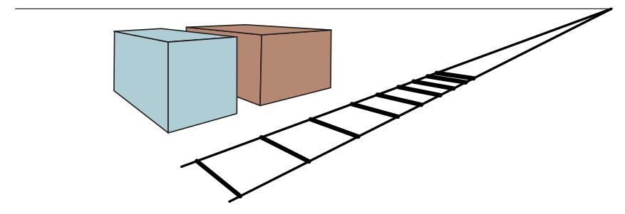
برای دیدنِ تصویرِ فوکوسشده، باید مطمئن شویم همهٔ فوتونهای رسیده به یک حسگذار تقریباً از همان نقطهٔ شیءِ جهان میآیند. سادهترین راهِ تشکیلِ تصویرِ فوکوسشده مشاهدهٔ اشیای ساکن با «دوربینِ سوراخسوزنی» (Pinhole Camera) است، که شاملِ روزنهای (O) در جلوی جعبه و صفحهٔ تصویری در عقبِ جعبه است (شکل ۲۵.۲). روزنه «دیافراگم» (Aperture) نامیده میشود. اگر سوراخِ سوزنی بهاندازهٔ کافی کوچک باشد، هر حسگذارِ ریزِ صفحهٔ تصویر فقط فوتونهایی را میبیند که تقریباً از همان نقطهٔ شیء میآیند، و بنابراین تصویر فوکوسشده است. میتوانیم تصاویرِ فوکوسشدهٔ اشیای متحرک را نیز با دوربینِ سوراخسوزنی تشکیل دهیم، تا زمانی که شیء فقط فاصلهٔ کوتاهی در پنجرهٔ زمانیِ حسگذارها حرکت کند. در غیرِ این صورت، تصویرِ شیءِ متحرک خارج از فوکوس است، اثری که «محوشدگیِ حرکت» (Motion Blur) نامیده میشود. یکی از راههای دستکاریِ پنجرهٔ زمانی بازوبستهکردنِ سوراخِ سوزنی است.
دوربینهای سوراخسوزنی فهمِ مدلِ هندسیِ رفتارِ دوربین را آسان میکنند (که با بیشترِ دستگاههای تصویربرداریِ دیگر پیچیدهتر است—اما مشابه). از سامانهٔ مختصاتِ سهبعدی (3D) با مبدأ در O استفاده میکنیم و نقطهای P در صحنه با مختصاتِ (X,Y,Z) را در نظر میگیریم. P به نقطهٔ P′ در صفحهٔ تصویر با مختصاتِ (x,y,z) فرافکنی میشود. اگر f «فاصلهٔ کانونی» (Focal Length)—فاصله از سوراخِ سوزنی تا صفحهٔ تصویر—باشد، آنگاه با مثلثهای متشابه میتوانیم معادلههای زیر را اشتقاق دهیم:
−x/f = X/Z, −y/f = Y/Z ⇒ x = −fX/Z, y = −fY/Zاین معادلهها فرایندِ تشکیلِ تصویری را تعریف میکنند که «فرافکنیِ پرسپکتیوی» (Perspective Projection) نامیده میشود. توجه کنید Z در مخرج به این معناست که هرچه شیء دورتر باشد، تصویرش کوچکتر خواهد بود. همچنین توجه کنید علامتهای منفی به این معناست که تصویر در مقایسه با صحنه، هم چپ-راست و هم بالا-پایین وارونه است.
تصویربرداریِ پرسپکتیوی تعدادی اثرِ هندسی دارد. اشیای دور کوچک به نظر میرسند. خطوطِ موازی به نقطهای رویِ افق همگرا میشوند. (ریلهای قطار را در نظر بگیر، شکل ۲۵.۱.) خطی در صحنه در جهتِ (U,V,W) و گذرنده از نقطهٔ (X₀,Y₀,Z₀) را میتوان بهصورتِ مجموعهٔ نقطههای (X₀+λU, Y₀+λV, Z₀+λW) توصیف کرد، با λ که بینِ −∞ و +∞ تغییر میکند. انتخابهای متفاوتِ (X₀,Y₀,Z₀) خطوطِ متفاوتی موازیِ یکدیگر میدهند. فرافکنیِ نقطهٔ P_λ از این خط بر صفحهٔ تصویر بهصورتِ زیر است:
P_λ = (f(X₀ + λU) / (Z₀ + λW), f(Y₀ + λV) / (Z₀ + λW))وقتی λ → ∞ یا λ → −∞، این به P∞ = (fU/W، fV/W) تبدیل میشود اگر W ≠ 0. این بدانمعناست دو خطِ موازیِ خارجشونده از نقطههای متفاوتِ فضا در تصویر همگرا خواهند شد—برای λ بزرگ، نقطههای تصویر تقریباً یکساناند، هر چه مقدارِ (X₀,Y₀,Z₀) باشد (باز، ریلهای قطار را در نظر بگیر، شکل ۲۵.۱). P∞ را «نقطهٔ گریز» (Vanishing Point) وابسته به خانوادهٔ خطوطِ راستِ با جهتِ (U,V,W) مینامیم. خطوطِ با جهتِ یکسان نقطهٔ گریزِ مشترکی دارند.
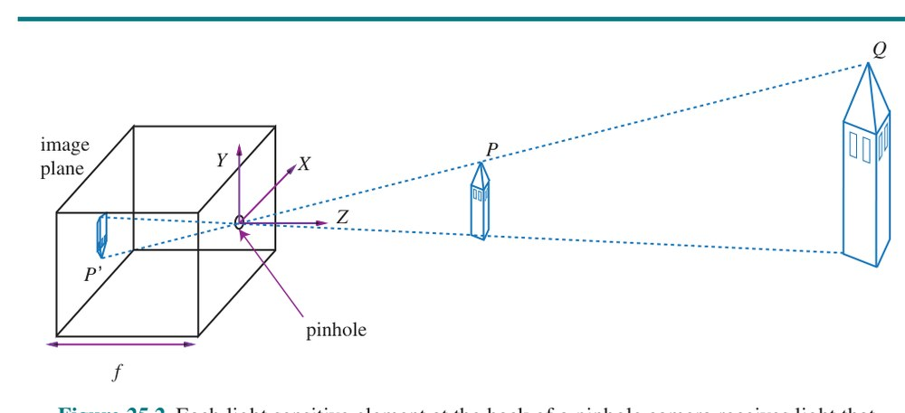
دوربینهای سوراخسوزنی میتوانند نور را خوب فوکوس کنند، اما چون سوراخِ سوزنی کوچک است، نورِ کمی وارد میشود و تصویر تاریک خواهد بود. در طولِ مدتِ کوتاهی، فقط چند فوتون به هر نقطهٔ حسگذار برخورد میکند، پس سیگنال در هر نقطه توسط نوسانهای تصادفی مسلط میشود؛ میگوییم تصویرِ فیلمیِ تاریک دانهدار است و تصویرِ دیجیتالِ تاریک نویزی؛ به هر حال، تصویر کیفیتِ پایینی دارد. بزرگکردنِ سوراخ (دیافراگم) با جمعکردنِ نورِ بیشتر از دامنهٔ وسیعتری از جهتها تصویر را روشنتر میکند. با این حال، با دیافراگمِ بزرگتر، نوری که به نقطهٔ خاصی از صفحهٔ تصویر برخورد میکند از چند نقطهٔ صحنهٔ جهانِ واقعی آمده خواهد بود، پس تصویر خارج از فوکوس خواهد بود. به راهی برای بازفوکوسکردنِ تصویر نیاز داریم.
چشمهای مهرهداران و دوربینهای مدرن از «سامانهٔ عدسی» (Lens System) استفاده میکنند—تکهٔ شفافِ واحدی از بافت در چشم و سامانهای از چند عنصرِ عدسیِ شیشهای در دوربین. در شکل ۲۵.۳ میبینیم نورِ نوکِ شمع در همهٔ جهتها پخش میشود. دوربینی (یا چشمی) با عدسی همهٔ نوری را که به هر جایِ عدسی برخورد میکند—ناحیهای بسیار بزرگتر از سوراخِ سوزنی—میگیرد و همهٔ آن نور را به نقطهٔ تکیِ صفحهٔ تصویر فوکوس میکند. نورِ سایرِ بخشهای شمع بههمینسان جمع و به نقطههای دیگرِ صفحهٔ تصویر فوکوس میشود. نتیجه تصویری روشنتر، کمنویزتر و فوکوسشده است.
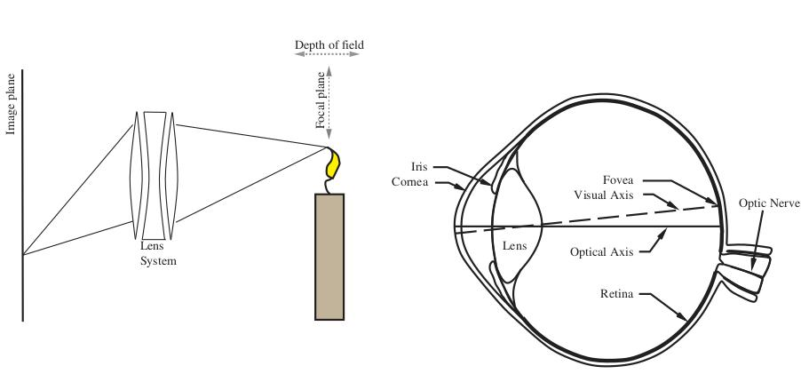
سامانههای عدسی همهٔ نورِ همهجایِ جهانِ واقعی را فوکوس نمیکنند؛ طراحیِ عدسی آنها را به فوکوسکردنِ نورِ فقط نقطههایی که در دامنهای از عمقِ Z از عدسی قرار دارند محدود میکند. مرکزِ این دامنه—جایی که فوکوس تیزترین است—«صفحهٔ کانونی» (Focal Plane) و دامنهٔ عمقهایی که فوکوس برای آنها بهاندازهٔ کافی تیز میماند «عمقِ میدان» (Depth of Field) نامیده میشود. هرچه دیافراگمِ عدسی (روزنه) بزرگتر باشد، عمقِ میدان کوچکتر است.
اگر بخواهید رویِ چیزی در فاصلهٔ متفاوت فوکوس کنید چه؟ برای حرکتِ صفحهٔ کانونی، عناصرِ عدسیِ دوربین میتوانند به عقب و جلو حرکت کنند، و عدسیِ چشم میتواند شکلش را تغییر دهد—اما با افزایشِ سن، عدسیِ چشم تمایل به سختشدن دارد، که تواناییِ تنظیمِ فاصلههای کانونی را کاهش میدهد و بسیاری از انسانها را به افزودنِ عدسیِ خارجی—عینک—به بیناییشان نیازمند میکند.
اثرهای هندسیِ تصویربرداریِ پرسپکتیوی همیشه برجسته نیستند. برای نمونه، پنجرههای ساختمانیِ آن سویِ خیابان بسیار کوچکتر از پنجرههای نزدیک به نظر میرسند، اما دو پنجرهای که کنارِ هماند تقریباً همان اندازه را خواهند داشت، حتی اگر یکی کمی دورتر باشد. این گزینه را داریم که پنجرهها را با مدلِ سادهشدهای به نامِ «فرافکنیِ ارتوگرافیکِ مقیاسشده» (Scaled Orthographic Projection) مدیریت کنیم، نه فرافکنیِ پرسپکتیوی. اگر عمقِ Z همهٔ نقطههای یک شیء درونِ دامنهٔ Z₀ ± ΔZ باشد، با ΔZ ≪ Z₀، آنگاه عاملِ مقیاسِ پرسپکتیویِ f/Z را میتوان با ثابتِ s = f/Z₀ تقریب زد. معادلههای فرافکنی از مختصاتِ صحنهٔ (X,Y,Z) به صفحهٔ تصویر بهصورتِ x = sX و y = sY میشوند. کوتاهنمایی همچنان در مدلِ فرافکنیِ ارتوگرافیکِ مقیاسشده رخ میدهد، زیرا توسط متمایلشدنِ شیء به دور از دید ایجاد میشود.
روشناییِ پیکسلی در تصویر تابعی از روشناییِ وصلهٔ سطحِ صحنهای است که به آن پیکسل فرافکنی میشود. برای دوربینهای مدرن، این تابع برای شدتهای میانیِ نور خطی است، اما برای روشناییِ تاریکتر و روشنتر غیرخطیهای برجستهای دارد. از مدلِ خطی استفاده میکنیم.
روشناییِ تصویر سرنخِ قویِ، اگر مبهمِ، هم برای شکل و هم برای هویتِ اشیا است. ابهام رخ میدهد، زیرا سه عامل در مقدارِ نوری که از نقطهای از یک شیء به تصویر میآید سهیماند: شدتِ کلِ «نورِ محیطی» (Ambient Light)؛ اینکه نقطه رو به نور است یا در سایه؛ و مقدارِ نورِ بازتابیده از نقطه. «بازتاب» (Reflection).
انسانها در ابهامزداییِ روشنایی بهشکلِ شگفتآوری خوباند—معمولاً میتوانند تفاوتِ بینِ شیءِ سیاهِ در نورِ روشن و شیءِ سفیدِ در سایه را بگویند، حتی اگر هر دو همان روشناییِ کلی را داشته باشند. با این حال، انسانها گاهی سایهروشن و علامتگذاری را با هم اشتباه میگیرند—خطِّ آرایشِ تیرهای زیرِ استخوانِ گونه اغلب مانندِ اثرِ سایهروشن به نظر میرسد و چهره را لاغرتر نشان میدهد.
بیشترِ سطوح نور را با فرایندِ «بازتابِ پخشیده» (Diffuse Reflection) بازتاب میکنند. بازتابِ پخشیده نور را بهطورِ یکنواخت در جهتهایِ ترککنندهٔ سطح پراکنده میکند، پس روشناییِ سطحِ پخشیده به جهتِ دید بستگی ندارد. بیشترِ پارچهها این ویژگی را دارند، و همچنین بیشترِ رنگها، سطوحِ چوبیِ زبر، بیشترِ پوششِ گیاهی و سنگ یا بتنِ زبر.
«بازتابِ آینهای» (Specular Reflection) باعث میشود نورِ ورودی سطح را در لوبی از جهتها ترک کند که توسط جهتی که نور از آن آمده تعیین میشود. آینه یک نمونه است. آنچه میبینید به جهتی بستگی دارد که در آن به آینه نگاه میکنید. در این مورد، لوبِ جهتها بسیار باریک است، که دلیلِ اینکه میتوانید اشیای متفاوت را در آینه تفکیک کنید همین است. برای بسیاری از سطوح، لوب پهنتر است. این سطوح لکههای روشنِ کوچکی نشان میدهند، که معمولاً «برقِ آینهای» (Specularity) نامیده میشوند. با حرکتِ سطح یا نور، برقهای آینهای نیز حرکت میکنند. بهدور از این لکهها، سطح طوری رفتار میکند که گویی پخشیده است. برقهای آینهای اغلب رویِ سطوحِ فلزی، رنگشده، پلاستیکی و خیس دیده میشوند. شناساییِ آنها آسان است، زیرا کوچک و روشناند (شکل ۲۵.۴). برای تقریباً همهٔ مقاصد، کافی است همهٔ سطوح را پخشیدهبا-برقِ-آینهای مدل کنیم.
منبعِ اصلیِ روشناییِ بیرون خورشید است، که پرتوهایش همگی بهصورتِ موازی در جهتِ شناختهشدهای سفر میکنند، زیرا آنقدر دور است. این رفتار را با «منبعِ نورِ نقطهایِ دور» (Distant Point Light Source) مدل میکنیم. این مهمترین مدلِ نورپردازی است و برای صحنههای داخلی و همچنین صحنههای بیرونی کاملاً مؤثر است. مقدارِ نورِ جمعشده توسط وصلهٔ سطح در این مدل به زاویهٔ θ بینِ جهتِ روشنایی و نرمال (عمود) بر سطح بستگی دارد (شکل ۲۵.۵).
وصلهٔ سطحِ پخشیدهای که توسط این مدل روشن شده کسری از نوری را که جمع میکند بازتاب خواهد کرد، که «سپیداییِ پخشیده» (Diffuse Albedo) نامیده میشود. برای سطوحِ عملی، این در بازهٔ 0.05–0.95 قرار دارد. «قانونِ کسینوسیِ لامبرت» (Lambert's Cosine Law) بیان میکند روشناییِ وصلهٔ پخشیده بهصورتِ زیر است:
I = ρ I₀ cos θکه I₀ شدتِ منبعِ نور، θ زاویهٔ بینِ جهتِ منبعِ نور و نرمالِ سطح، و ρ سپیداییِ پخشیده است. این قانون پیشبینی میکند پیکسلهای روشنِ تصویر از وصلههای سطحی میآیند که مستقیماً رو به نورند و پیکسلهای تیره از وصلههایی که نور را فقط مماسی میبینند، پس سایهروشنِ رویِ سطح اطلاعاتِ شکلی فراهم میکند. اگر سطح نتواند منبع را ببیند، در سایه است. «سایهها» (Shadow) بهندرت سیاهِ یکنواختاند، زیرا سطحِ سایهدار معمولاً نوری از منابعِ دیگر دریافت میکند. بیرون، مهمترین منبعِ غیر از خورشید آسمان است، که کاملاً روشن است. داخل، نورِ بازتابیده از سطوحِ دیگر وصلههای سایهدار را روشن میکند. این «بازتابهای متقابل» (Interreflection) میتوانند اثرِ چشمگیری بر روشناییِ سطوحِ دیگر نیز داشته باشند. این اثرها گاهی با افزودنِ عبارتِ ثابتِ «روشناییِ محیطی» (Ambient Illumination) به شدتِ پیشبینیشده مدل میشوند.
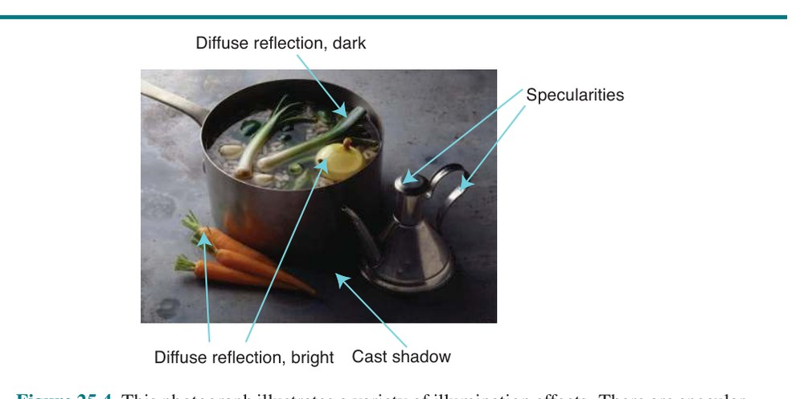
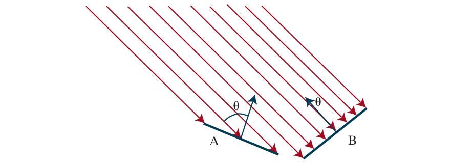
میوه رشوهای است که درخت به جانوران پیشنهاد میکند تا دانههایش را حمل کنند. درختانی که میتوانند سیگنال دهند این رشوه کی آماده است مزیت دارند، و همچنین جانورانی که میتوانند این سیگنالها را بخوانند. در نتیجه، بیشترِ میوهها سبز شروع میشوند و وقتی رسیدهاند قرمز یا زرد میشوند، و بیشترِ جانورانِ میوهخوار میتوانند این تغییراتِ رنگی را ببینند. بهطورِ کلی، نورِ رسیده به چشم مقدارهای انرژیِ متفاوتی در طولموجهای متفاوت دارد، و با «چگالیِ انرژیِ طیفی» (Spectral Energy Density) بازنمایی میشود.
دوربینها و سامانهٔ بیناییِ انسان به نور در طولموجهای حدودِ ۳۸۰ نانومتر (بنفش) تا حدودِ ۷۵۰ نانومتر (قرمز) پاسخ میدهند. در سامانههای تصویربرداریِ رنگی، انواعِ متفاوتی از گیرنده هست که به طولموجهای متفاوت کموبیش قوی پاسخ میدهند. در انسانها، حسِ رنگ وقتی رخ میدهد که سامانهٔ بینایی پاسخِ گیرندههای نزدیکِ هم رویِ شبکیه را مقایسه میکند. سامانههای بیناییِ رنگیِ جانوران معمولاً انواعِ نسبتاً کمی گیرنده دارند، و بنابراین جزئیاتِ نسبتاً کمی از تابعِ چگالیِ انرژیِ طیفی را بازنمایی میکنند (برخی جانوران فقط یک نوعِ گیرنده دارند؛ برخی تا شش نوع). بیناییِ رنگیِ انسان توسط سه نوعِ گیرنده تولید میشود. بیشترِ سامانههای دوربینِ رنگی نیز فقط از سه نوعِ گیرنده استفاده میکنند، زیرا تصاویر برای انسانها تولید میشوند، اما برخی سامانههای تخصصی میتوانند اندازهگیریهای بسیار دقیقی از چگالیِ انرژیِ طیفی تولید کنند.
چون بیشترِ انسانها سه نوعِ گیرندهٔ حساس به رنگ دارند، «اصلِ سهرنگی» (Principle of Trichromacy) برقرار است. این ایده، که نخستین بار توسط توماس یانگ در ۱۸۰۲ پیشنهاد شد، بیان میکند ناظرِ انسانی میتواند ظاهرِ بصریِ هر چگالیِ انرژیِ طیفی، هرچند پیچیده، را با مخلوطکردنِ مقدارهای مناسبِ فقط سه «رنگِ اولیه» (Primary) تطبیق دهد. رنگهای اولیه منابعِ نورِ رنگیاند، که چنان انتخاب میشوند که هیچ مخلوطی از هر دوِ آنها با سومی تطبیق نکند. انتخابِ رایج یکی قرمز، یکی سبز و یکی آبی است، که بهصورتِ RGB مخفف میشود. هرچند شیءِ رنگیِ دادهشده ممکن است فرکانسهای مؤلفهٔ بسیاری از نور داشته باشد، میتوانیم رنگ را با مخلوطکردنِ فقط سه رنگِ اولیه تطبیق دهیم، و بیشترِ مردم بر نسبتهای مخلوط توافق خواهند کرد. این بدانمعناست میتوانیم تصاویرِ رنگی را با فقط سه عدد بهازایِ هر پیکسل—مقادیرِ RGB—بازنمایی کنیم.
برای بیشترِ کاربردهای بیناییِ رایانه، بهاندازهٔ کافی دقیق است سطح را بهعنوانِ دارایِ سه سپیداییِ پخشیدهٔ (RGB) متفاوت و منابعِ نور را بهعنوانِ دارایِ سه شدتِ (RGB) مدل کنیم. سپس قانونِ کسینوسیِ لامبرت را بر هر یک اعمال میکنیم تا مقادیرِ پیکسلِ قرمز، سبز و آبی بهدست آید. این مدل، بهدرستی، پیشبینی میکند همان سطح تحتِ نورهای رنگیِ متفاوت وصلههای تصویرِ رنگیِ متفاوتی تولید میکند. در واقع، ناظرانِ انسانی در نادیدهگرفتنِ اثرهای نورهای رنگیِ متفاوت کاملاً خوباند و به نظر میرسد رنگی را برآورد میکنند که سطح تحتِ نورِ سفید میداشت، اثری که «ثباتِ رنگ» (Color Constancy) نامیده میشود.
نور از اشیای صحنه بازتاب میشود تا تصویری شاملِ، مثلاً، دوازده میلیون پیکسلِ سهبایتی تشکیل دهد. مانندِ همهٔ حسگذارها، نویزی در تصویر خواهد بود، و در هر حال دادهٔ زیادی برای سروکلهزدن با آن هست. راهِ شروعِ تحلیلِ این داده تولیدِ بازنماییهای سادهشدهای است که آنچه مهم است را آشکار میکنند، اما جزئیات را کاهش میدهند. بخشِ زیادی از رویهٔ کنونی این بازنماییها را از داده یاد میگیرد. اما چهار ویژگی از تصاویر و ویدئو هست که بهویژه کلیاند: لبهها، بافت، جریانِ نوری و بخشبندی به ناحیهها.
«لبه» (Edge) جایی رخ میدهد که تفاوتِ بزرگی در شدتِ پیکسل در بخشی از تصویر هست. ساختنِ بازنماییهای لبه شاملِ عملیاتِ محلی رویِ تصویر است—باید مقدارِ پیکسلی را با برخی مقادیرِ نزدیک مقایسه کنید—و به هیچ دانشی دربارهٔ آنچه در تصویر است نیاز ندارد. پس، تشخیصِ لبه میتواند زود در خطِ لولهٔ عملیات بیاید و آن را عملیاتِ «اولیه» یا «سطحپایین» مینامیم.
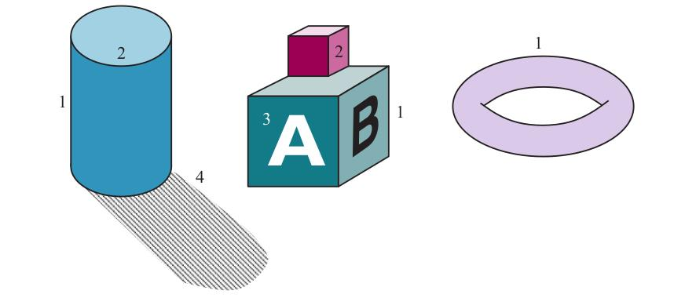
بقیهٔ عملیاتها مستلزمِ رسیدگی به ناحیهٔ بزرگتری از تصویرند. برای نمونه، توصیفِ بافت بر استخری از پیکسلها اعمال میشود—برای گفتنِ «راهراه»، باید چند راهراه ببینید. «جریانِ نوری» (Optical Flow) بازنماییِ این است که پیکسلها از یک تصویرِ دنباله به تصویرِ بعدی به کجا حرکت میکنند، و این میتواند ناحیهٔ بزرگتری را پوشش دهد. «بخشبندی» (Segmentation) تصویر را به ناحیههایی از پیکسلها میبُرد که بهطورِ طبیعی به هم تعلق دارند، و انجامِ این کار مستلزمِ نگاهکردن به کلِ ناحیه است. عملیاتهایی مانندِ این گاهی «عملیاتِ سطحمیانی» نامیده میشوند.
لبهها خطوطِ راست یا منحنیهایی در صفحهٔ تصویرند که در عرضِ آنها تغییرِ «چشمگیری» در روشناییِ تصویر هست. هدفِ تشخیصِ لبه انتزاعِ دور از تصویرِ شلوغِ چندمگابایتی و به سمتِ بازنماییِ فشردهتر و انتزاعیتر است، چنانکه در شکل ۲۵.۶.
اثرهای صحنه اغلب به تغییرهای بزرگِ شدتِ تصویر میانجامند، و بنابراین لبههایی در تصویر تولید میکنند. ناپیوستگیهای عمق (که در شکل با ۱ برچسب خوردهاند) میتوانند لبه ایجاد کنند، زیرا وقتی از ناپیوستگی عبور میکنید، رنگ معمولاً تغییر میکند. وقتی نرمالِ سطح تغییر میکند (با ۲ برچسب خورده)، شدتِ تصویر اغلب تغییر میکند. وقتی بازتابِ سطح تغییر میکند (با ۳ برچسب خورده)، شدتِ تصویر اغلب تغییر میکند. سرانجام، سایه (با ۴ برچسب خورده) ناپیوستگیِ روشنایی است که لبهای در تصویر ایجاد میکند، حتی اگر لبهای در شیء نباشد. تشخیصدهندههای لبه نمیتوانند علتِ ناپیوستگی را از هم باز کنند، که به پردازشِ بعدی واگذار میشود.
یافتنِ لبهها نیاز به مراقبت دارد. شکل ۲۵.۷ (بالا) مقطعِ یکبعدیِ تصویری را عمود بر لبهای نشان میدهد، با لبهای در x = 50. ممکن است تصویر را مشتق بگیرید و به دنبالِ جاهایی بگردید که اندازهٔ مشتقِ I′(x) بزرگ است. این تقریباً کار میکند، اما در شکل ۲۵.۷ (وسط)، میبینیم هرچند قلهای در x = 50 هست، قلههای فرعیای نیز در مکانهای دیگر (مثلاً x = 75) هستند که میتوانند با لبههای واقعی اشتباه گرفته شوند. اینها بهدلیلِ وجودِ «نویز» (Noise) در تصویر پدید میآیند. نویز در اینجا به معنای تغییرهایی در مقدارِ پیکسل است که به لبه ربطی ندارند. برای نمونه، میتواند نویزِ گرمایی در دوربین باشد؛ میتواند خراشهایی رویِ سطحِ شیء باشد که نرمالِ سطح را در ریزترین مقیاس تغییر میدهند؛ میتواند تغییرهای جزئی در سپیداییِ سطح باشد؛ و مانندِ آن. هر یک از این اثرها گرادیان را بزرگ نشان میدهند، اما به این معنا نیستند که لبهای حاضر است. اگر نخست تصویر را «هموار» کنیم، قلههای کاذب کاهش مییابند، چنانکه در شکل ۲۵.۷ (پایین) میبینیم. هموارسازی شاملِ استفاده از پیکسلهای اطراف برای سرکوبِ نویز است. مقدارِ «واقعی»ِ پیکسلِ خود را بهعنوانِ مجموعِ وزنداری از پیکسلهای نزدیک پیشبینی خواهیم کرد، با وزنِ بیشتر برای نزدیکترین پیکسلها.
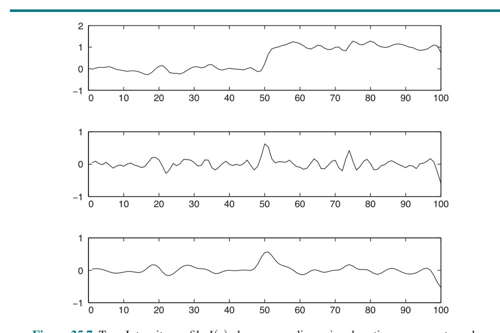
به یاد آورید تابعِ گاوسیِ میانگین-صفر با انحرافِ معیارِ σ بهصورتِ زیر است:
G_σ(x) = (1 / √(2π σ²)) e^(−x² / (2σ²))
G_σ(x, y) = (1 / (2π σ²)) e^(−(x² + y²) / (2σ²))(در یک بُعد و دو بُعد).
اعمالِ فیلترِ گاوسی به این معناست که شدتِ I(x₀,y₀) با مجموعِ، رویِ همهٔ پیکسلهای (x,y)، I(x,y)G_σ(d) جایگزین میشود، که d فاصله از (x₀,y₀) تا (x,y) است. این نوعِ مجموعِ وزندار چنان رایج است که نام و نمادگذاریِ خاصی برایش هست. میگوییم تابعِ h «پیچشِ» (Convolution) دو تابعِ f و g است (که با h = f ∗ g نشان داده میشود) اگر داشته باشیم:
h(x) = ∑_{u=−∞}^{∞} f(u) g(x − u)در یک بُعد، یا
h(x, y) = ∑_{u=−∞}^{∞} ∑_{v=−∞}^{∞} f(u, v) g(x − u, y − v)در دو بُعد. پس تابعِ هموارسازی با پیچیدنِ تصویر با گاوسی، I ∗ G_σ، محقق میشود. σ یک پیکسل برای هموارکردنِ مقدارِ کمی نویز کافی است، در حالی که ۲ پیکسل مقدارِ بیشتری را هموار میکند، اما با ازدسترفتنِ برخی جزئیات. چون تأثیرِ گاوسی بهسرعت با فاصله محو میشود، در عمل میتوانیم ∞± در جمعها را با چیزی مانندِ ±3σ جایگزین کنیم.
اینجا فرصتِ بهینهسازی داریم: میتوانیم هموارسازی و لبهیابی را در عملیاتِ تکی ترکیب کنیم. قضیهای هست که برای هر توابعِ f و g، مشتقِ پیچش، (f ∗ g)′، با پیچشِ با مشتق، f ∗ (g′)، برابر است. پس بهجای هموارسازیِ تصویر و سپس مشتقگیری، میتوانیم صرفاً تصویر را با مشتقِ تابعِ هموارسازیِ گاوسی، G′_σ، بپیچانیم. سپس آن قلههای پاسخ را که بالای آستانهای هستند، که برای حذفِ قلههای کاذبِ ناشی از نویز انتخاب شده، بهعنوانِ لبه علامت میزنیم.
تعمیمِ طبیعیِ این الگوریتم از مقطعهای یکبعدی به تصاویرِ دوبعدیِ عمومی هست. در دو بُعد، لبهها ممکن است در هر زاویهٔ θ باشند. با درنظرگرفتنِ روشناییِ تصویر بهعنوانِ تابعِ اسکالری از متغیرهای x، y، گرادیانِ آن بردارِ ∇I = (∂I/∂x، ∂I/∂y) است. لبهها با مکانهایی در تصاویر متناظرند که روشنایی در آنها تغییرِ تند میکند، و بنابراین اندازهٔ گرادیان، ‖∇I‖، باید در نقطهٔ لبه بزرگ باشد. وقتی تصویر روشنتر یا تاریکتر میشود، بردارِ گرادیان در هر نقطه بلندتر یا کوتاهتر میشود، اما جهتِ گرادیانِ ∇I/‖∇I‖ = (cosθ، sinθ) تغییر نمیکند. این در هر پیکسل θ = θ(x,y) به ما میدهد، که «جهتِ لبه» (Orientation) را در آن پیکسل تعریف میکند. این ویژگی اغلب مفید است، زیرا به شدتِ تصویر بستگی ندارد.
چنانکه از بحثِ تشخیصِ لبه در سیگنالهای یکبعدی انتظار دارید، برای تشکیلِ گرادیان، در واقع ∇I را محاسبه نمیکنیم، بلکه ∇(I ∗ G_σ) را، پس از هموارسازیِ تصویر با پیچیدنِ آن با گاوسی. ویژگیِ پیچشها این است که این معادلِ پیچیدنِ تصویر با مشتقهای جزئیِ گاوسی است. پس از محاسبهٔ گرادیان، میتوانیم با یافتنِ نقطههای لبه و پیونددادنِ آنها به هم، لبهها را بهدست آوریم. برای گفتنِ اینکه نقطهای نقطهٔ لبه است یا نه، باید نقطههای دیگری را در فاصلهٔ کوچکی به جلو و عقب در جهتِ گرادیان نگاه کنیم. اگر اندازهٔ گرادیان در یکی از این نقطهها بزرگتر باشد، میتوانستیم با جابهجاییِ بسیار جزئیِ منحنیِ لبه نقطهٔ لبهٔ بهتری بگیریم. افزون بر این، اگر اندازهٔ گرادیان بیشازحد کوچک باشد، نقطه نمیتواند نقطهٔ لبه باشد. پس در نقطهٔ لبه، اندازهٔ گرادیان بیشینهٔ محلی در جهتِ گرادیان است، و اندازهٔ گرادیان بالای آستانهٔ مناسبی است.
پس از علامتگذاریِ پیکسلهای لبه با این الگوریتم، مرحلهٔ بعدی پیونددادنِ آن پیکسلهایی است که به همان منحنیهای لبه تعلق دارند. این را میتوان با فرضِ اینکه هر دو پیکسلِ مجاوری که هر دو پیکسلِ لبه با جهتهای سازگارند به همان منحنیِ لبه تعلق دارند انجام داد.
تشخیصِ لبه کامل نیست. شکل ۲۵.۸ (الف) تصویری از صحنهای شاملِ منگنهای رویِ میز نشان میدهد، و شکل ۲۵.۸ (ب) خروجیِ الگوریتمِ تشخیصِ لبه را رویِ این تصویر. چنانکه میبینید، خروجی کامل نیست: شکافهایی هست که در آنها هیچ لبهای ظاهر نمیشود، و لبههای «نویزی» هست که با هیچچیزِ مهمی در صحنه متناظر نیستند. مراحلِ بعدیِ پردازش باید این خطاها را تصحیح کنند.
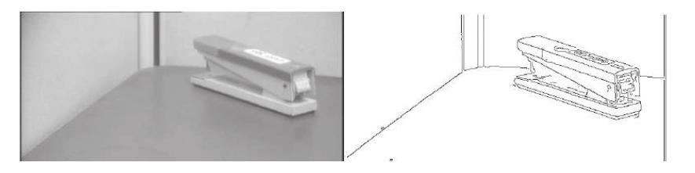
در زبانِ روزمره، «بافت» (Texture) سطوح به آنچه هنگامِ کشیدنِ انگشت رویِ آنها احساس میشود اشاره میکند (واژههای «texture»، «textile» و «text» ریشهٔ لاتینِ مشترکی دارند، واژهای برای بافندگی). در بیناییِ محاسباتی، بافت به الگویی رویِ سطح اشاره دارد که میتوان بهصورتِ بصری حس کرد. معمولاً، این الگوها تقریباً منظماند. نمونهها شاملِ الگویِ پنجرههای ساختمان، بخیههای ژاکتِ پشمی، لکههای پوستِ پلنگ، تیغههای علفِ چمن، سنگریزههای ساحل و جمعیتِ مردم در استادیوم است.
گاهی چیدمان کاملاً تناوبی است، مانندِ بخیههای ژاکتِ پشمی؛ در نمونههای دیگر، مانندِ سنگریزههای ساحل، نظم فقط در معنایی آماری است: چگالیِ سنگریزهها تقریباً در بخشهای متفاوتِ ساحل یکسان است. مدلِ تقریبیِ معمولِ بافت الگویِ تکراریِ عناصری است، که گاهی «تکسِل» (Texel) نامیده میشوند. این مدل کاملاً مفید است، زیرا ساختن یا یافتنِ بافتهای واقعی که هرگز تکرار نمیشوند بهشکلِ شگفتآوری سخت است.
بافت ویژگیِ وصلهٔ تصویر است، نه پیکسلی در انزوا. توصیفِ خوبِ بافتِ وصله باید خلاصه کند وصله چهشکلاند. توصیف نباید وقتی نورپردازی تغییر میکند تغییر کند. این استفاده از نقطههای لبه را رد میکند؛ اگر بافتی روشن روشن شود، بسیاری از مکانهای درونِ وصله کنتراستِ بالا خواهند داشت و نقطههای لبه تولید میکنند؛ اما اگر همان بافت زیرِ نورِ کمروشنتری دیده شود، بسیاری از این لبهها بالای آستانه نخواهند بود. توصیف باید بهشیوهای معقول وقتی وصله میچرخد تغییر کند. حفظِ تفاوتِ بینِ راهراههای عمودی و افقی مهم است، اما نه اگر راهراههای عمودی به افقی چرخانده شوند.
نشان داده شده بازنماییهای بافتی با این ویژگیها برای دو تکلیفِ کلیدی مفیدند. نخستین شناساییِ اشیا است—گورخر و اسب شکلِ مشابهی دارند، اما بافتهای متفاوت. دومین تطبیقِ وصلههای یک تصویر با وصلههای تصویرِ دیگر است، گامِ کلیدی در بازیابیِ اطلاعاتِ سهبعدی از تصاویرِ متعدد (بخش ۲۵.۶.۱).
در اینجا ساختِ پایهای برای بازنماییِ بافت آمده. با توجه به وصلهٔ تصویر، جهتِ گرادیان را در هر پیکسلِ وصله محاسبه کن، و سپس وصله را با «هیستوگرامِ جهتها» مشخص کن. جهتهای گرادیان تا حدِ زیادی نسبت به تغییرهای روشنایی ناوردایند (گرادیان بلندتر خواهد شد، اما جهت تغییر نمیکند). به نظر میرسد هیستوگرامِ جهتها جنبههای مهمِ بافت را درمیگیرد. برای نمونه، راهراههای عمودی دو قله در هیستوگرام خواهند داشت (یکی برای سمتِ چپِ هر راهراه و یکی برای راست)؛ لکههای پلنگ جهتهای توزیعشدهٔ یکنواختتری خواهند داشت.
اما نمیدانیم وصله را چقدر بزرگ توصیف کنیم. دو راهبرد هست. در کاربردهای تخصصی، اطلاعاتِ تصویر آشکار میکند وصله باید چقدر بزرگ باشد (مثلاً، ممکن است وصلهای پر از راهراه را تا وقتی گورخر را بپوشاند رشد داد). جایگزین توصیفِ وصلهای بهمرکزیتِ هر پیکسل برای دامنهای از مقیاسهاست. این دامنه معمولاً از چند پیکسل تا وسعتِ تصویر میرود. حالا وصله را به ظرفهایی تقسیم کن، و در هر ظرف هیستوگرامِ جهتی بساز، سپس الگویِ هیستوگرامها را در عرضِ ظرفها خلاصه کن. دیگر ساختنِ این توصیفها با دست معمول نیست. در عوض، از شبکههای عصبیِ پیچشی برای تولیدِ بازنماییهای بافت استفاده میشود. اما بازنماییهای ساختهشده توسط شبکهها به نظر میرسد تقریباً همین ساخت را آینه میکنند.
بعد، بیایید بررسی کنیم وقتی بهجای یک تصویرِ ایستای تکی، دنبالهٔ ویدئویی داشته باشیم چه رخ میدهد. هرگاه حرکتِ نسبی بینِ دوربین و یک یا چند شیءِ صحنه باشد، حرکتِ ظاهریِ حاصل در تصویر «جریانِ نوری» (Optical Flow) نامیده میشود. این جهت و سرعتِ حرکتِ ویژگیهای تصویر را در نتیجهٔ حرکتِ نسبی بینِ بیننده و صحنه توصیف میکند. برای نمونه، اشیای دورِ مشاهدهشده از خودرویِ متحرک حرکتِ ظاهریِ بسیار کندتری از اشیای نزدیک دارند، پس نرخِ حرکتِ ظاهری میتواند چیزی دربارهٔ فاصله به ما بگوید.
در شکل ۲۵.۹ دو فریم از ویدئویِ بازیکنِ تنیس نشان میدهیم. در سمتِ راست، بردارهای جریانِ نوریِ محاسبهشده از این تصاویر را نمایش میدهیم. جریانِ نوری اطلاعاتِ مفیدی دربارهٔ ساختارِ صحنه رمز میکند—بازیکنِ تنیس در حالِ حرکت است و پسزمینه (تا حدِ زیادی) نیست. افزون بر این، بردارهای جریان چیزی دربارهٔ آنچه بازیکن انجام میدهد آشکار میکنند—یک بازو و یک پا سریع حرکت میکنند و سایرِ اعضای بدن نمیکنند.
میدانِ بردارِ جریانِ نوری را میتوان با مؤلفههایش vₓ(x,y) در جهتِ x و v_y(x,y) در جهتِ y بازنمایی کرد. برای اندازهگیریِ جریانِ نوری، باید نقطههای متناظر را بینِ یک فریمِ زمانی و فریمِ بعدی بیابیم. فنّ بسیار سادهلوحانهای بر این واقعیت مبتنی است که وصلههای تصویرِ اطرافِ نقطههای متناظر الگوهای شدتِ مشابهی دارند. بلوکی از پیکسلها بهمرکزیتِ پیکسلِ p، یعنی (x₀,y₀)، در زمانِ t را در نظر بگیر. این بلوکِ پیکسلها قرار است با بلوکهای پیکسلیِ بهمرکزیتِ پیکسلهای نامزدِ متفاوتِ qᵢ در (x₀+Dₓ, y₀+D_y) در زمانِ t+Dt مقایسه شود.
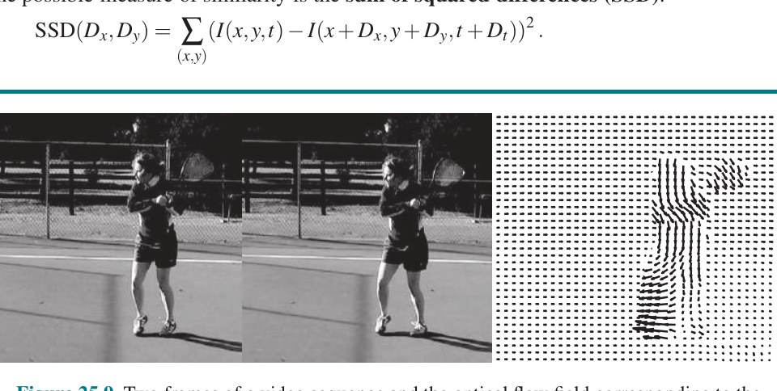
یکی از معیارهای ممکنِ شباهت «مجموعِ مجذورِ تفاضلها» (Sum of Squared Differences یا SSD) است:
SSD(Dₓ, D_y) = ∑_{(x, y)} (I(x, y, t) − I(x + Dₓ, y + D_y, t + Dt))²در اینجا، (x,y) رویِ پیکسلهای بلوکِ بهمرکزیتِ (x₀,y₀) تغییر میکند. (Dₓ, D_y)ای را مییابیم که SSD را کمینه میکند. جریانِ نوری در (x₀,y₀) سپس (vₓ, v_y) = (Dₓ/Dt, D_y/Dt) است. توجه کنید برای کارکردنِ این، باید بافتی در صحنه باشد، که به پنجرههایی شاملِ تغییرِ چشمگیرِ روشنایی در میانِ پیکسلها میانجامد. اگر به دیوارِ سفیدِ یکنواختی نگاه شود، آنگاه SSD برای نامزدهای متفاوتِ تطبیقِ q تقریباً یکسان خواهد بود و الگوریتم به حدسِ کور تقلیل مییابد. بهترین الگوریتمهای اندازهگیریِ جریانِ نوری بر انواعِ قیدهای اضافی برای برخورد با موقعیتهایی تکیه میکنند که صحنه فقط تا حدی بافتدار است.
«بخشبندی» (Segmentation) فرایندِ شکستنِ تصویر به گروههایی از پیکسلهای مشابه است. ایدهٔ پایه این است که هر پیکسلِ تصویر را میتوان با ویژگیهای بصریِ خاصی، مانندِ روشنایی، رنگ و بافت، مرتبط کرد. درونِ یک شیء، یا بخشِ تکی از شیء، این ویژگیها نسبتاً کم تغییر میکنند، در حالی که در عرضِ مرزِ بینِ دو شیء معمولاً تغییرِ بزرگِ یکی یا چندِ این ویژگیها هست. باید افرازی از تصویر به مجموعههای پیکسل بیابیم که این قیدها تا حدِ ممکن خوب ارضا شوند. توجه کنید یافتنِ فقط لبهها کافی نیست، زیرا بسیاری از لبهها مرزِ شیء نیستند. پس، برای نمونه، ببری در علف ممکن است در هر سمتِ هر راهراه و هر تیغهٔ علف لبهای تولید کند. در همهٔ دادهٔ لبهٔ گیجکننده، ممکن است ببر را به خاطرِ راهراهها از دست بدهیم.
دو راه برای مطالعهٔ مسئله هست، یکی بر تشخیصِ مرزهای این گروهها تمرکز میکند و دیگری بر تشخیصِ خودِ گروهها، که «ناحیه» (Region) نامیده میشوند. این را در شکل ۲۵.۱۰ نشان میدهیم، با تشخیصِ مرز در (ب) و استخراجِ ناحیه در (ج) و (د).
یکی از راههای صوریکردنِ مسئلهٔ تشخیصِ منحنیهای مرز بهعنوانِ مسئلهٔ ردهبندی است، پذیرایِ فنونِ یادگیریِ ماشینی. منحنیِ مرزی در مکانِ پیکسلِ (x,y) جهتی θ خواهد داشت. همسایگیِ تصویری بهمرکزیتِ (x,y) تقریباً مانندِ دیسکی است که با قطری به جهتِ θ به دو نیمه بریده شده. میتوانیم احتمالِ P_b(x,y,θ) را محاسبه کنیم که منحنیِ مرزی در آن پیکسل در امتدادِ آن جهت هست، با مقایسهٔ ویژگیهای دو نیمه. راهِ طبیعیِ پیشبینیِ این احتمال آموزشِ ردهبندِ یادگیریِ ماشینی با استفاده از مجموعهٔ دادهای از تصاویرِ طبیعی است که در آنها انسانها مرزهای حقیقتِ زمینی را علامت زدهاند—هدفِ ردهبند علامتزدنِ دقیقاً همان مرزهایی است که انسانها علامت زدهاند و نه دیگران. مرزهای تشخیصدادهشده با این فن بهتر از آنهاییاند که با فنِ سادهٔ تشخیصِ لبهٔ توصیفشده قبلاً یافت میشوند. اما هنوز دو محدودیت هست: (۱) پیکسلهای مرزیِ تشکیلشده با آستانهگذاریِ P_b(x,y,θ) تضمین نمیشود منحنیهای بسته تشکیل دهند، پس این رویکرد ناحیهها را تحویل نمیدهد، و (۲) تصمیمگیری فقط از بافتِ محلی بهره میبرد و از قیدهای سازگاریِ سراسری استفاده نمیکند.
رویکردِ جایگزین بر «خوشهبندیِ» پیکسلها به ناحیهها بر مبنای ویژگیهای روشنایی، رنگ و بافتشان مبتنی است. راههای متفاوتِ متعددی برای صوریکردنِ ریاضیِ این شهود هست. برای نمونه، شی و مالیک (2000) این را بهعنوانِ مسئلهٔ افرازِ گراف برپا کردند. گرههای گراف با پیکسلها و یالها با اتصالهای بینِ پیکسلها متناظرند. وزنِ Wᵢⱼ رویِ یالِ متصلکنندهٔ جفتِ پیکسلِ i و j بر مبنای اینکه دو پیکسل در روشنایی، رنگ، بافت و... چقدر مشابهاند است. سپس افرازهایی را مییابند که معیارِ «برشِ نرمالشده» را کمینه میکنند. بهطورِ تقریبی، معیارِ افرازِ گراف کمینهکردنِ مجموعِ وزنِ اتصالهای در عرضِ گروهها و بیشینهکردنِ مجموعِ وزنِ اتصالهای درونِ گروههاست.
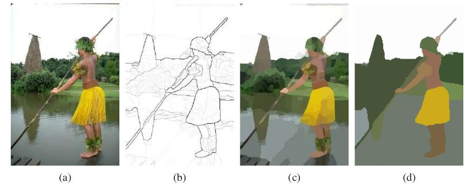
معلوم میشود رویکردهای مبتنی بر یافتنِ مرزها و مبتنی بر یافتنِ ناحیهها را میتوان جفت کرد، اما این امکانها را اینجا کاوش نمیکنیم. از بخشبندیِ صرفاً مبتنی بر ویژگیهای محلیِ سطحپایین مانندِ روشنایی و رنگ نمیتوان انتظار داشت مرزهای نهاییِ درستِ همهٔ اشیای صحنه را تحویل دهد. برای یافتنِ قابلِاعتمادِ مرزهای مرتبط با اشیا، همچنین لازم است دانشِ سطحبالایِ انواعِ اشیایی که ممکن است در صحنه انتظار داشت گنجانده شود. در این زمان، راهبردِ محبوب تولیدِ «بیشبخشبندی» (Over-Segmentation) تصویر است، که در آن تضمین میشود هیچیک از مرزهای واقعی را از دست نداده باشیم اما ممکن است مرزهای کاذبِ اضافیِ بسیاری علامت زده باشیم. ناحیههای حاصل، که «ابرپیکسل» (Superpixel) نامیده میشوند، کاهشِ چشمگیری در پیچیدگیِ محاسباتی برای الگوریتمهای گوناگون فراهم میکنند، زیرا تعدادِ ابرپیکسلها ممکن است در صدها باشد، در مقایسه با میلیونها پیکسلِ خام. بهرهبرداری از دانشِ سطحبالایِ اشیا موضوعِ بخشِ بعدی است، و تشخیصِ واقعیِ اشیا در تصاویر موضوعِ بخش ۲۵.۵.
ردهبندیِ تصویر برای دو حالتِ اصلی بهکار میرود. در یکی، تصاویر مربوط به اشیایند، برگرفته از ردهبندیِ دادهشدهای از ردهها، و چیزِ مهمِ دیگری در تصویر نیست—برای نمونه، کاتالوگی از تصاویرِ لباس یا مبلمان، که پسزمینه در آن مهم نیست، و خروجیِ ردهبند «ژاکتِ کشمیر» یا «صندلیِ اداری» است. در حالتِ دیگر، هر تصویر صحنهای شاملِ چند شیء را نشان میدهد. پس در علفزار ممکن است زرافه و شیری ببینید، و در اتاقِ نشیمن مبل و چراغی، اما انتظارِ زرافه یا زیردریایی در اتاقِ نشیمن را ندارید. حالا روشهایی برای ردهبندیِ تصویرِ مقیاسبزرگ داریم که میتوانند بهدقت «علفزار» یا «اتاقِ نشیمن» را خروجی دهند.
سامانههای مدرن تصاویر را با استفاده از «ظاهر» (Appearance) (یعنی رنگ و بافت، در مقابلِ هندسه) ردهبندی میکنند. دو دشواری هست. نخست، نمونههای متفاوتِ همان رده میتوانند متفاوت به نظر برسند—برخی گربهها سیاهاند و برخی دیگر نارنجی. دوم، همان گربه میتواند در زمانهای متفاوت بسته به چند اثر متفاوت به نظر برسد، (چنانکه در شکل ۲۵.۱۱ نشان داده شده):
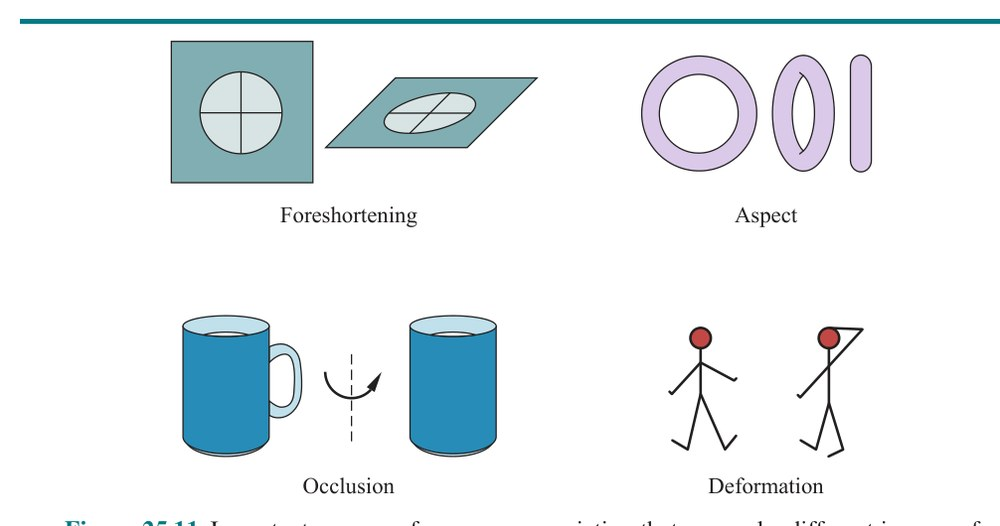
روشهای مدرن با یادگیریِ بازنماییها و ردهبندها از حجمِ بسیار بزرگِ دادهٔ آموزشی با شبکهٔ عصبیِ پیچشی با این مسائل برخورد میکنند. با مجموعهٔ آموزشیِ بهاندازهٔ کافی غنی، ردهبند هر اثرِ مهمی را بارها در آموزش دیده خواهد بود، و بنابراین میتواند اثر را جبران کند.
شبکههای عصبیِ پیچشی (CNN) ردهبندهای تصویرِ بهشکلِ تماشایی موفقایاند. با دادهٔ آموزشیِ کافی و نبوغِ آموزشیِ کافی، CNNها سامانههای ردهبندیِ بسیار موفقی تولید میکنند، بسیار بهتر از آنچه هر کسی با روشهای دیگر توانسته تولید کند.
مجموعهٔ دادهٔ ImageNet نقشِ تاریخی در توسعهٔ سامانههای ردهبندیِ تصویر با فراهمکردنِ بیش از ۱۴ میلیون تصویرِ آموزشی، ردهبندیشده به بیش از ۳۰٬۰۰۰ ردهٔ ریزدانه، ایفا کرد. ImageNet همچنین با رقابتِ سالانهای پیشرفت را ترغیب کرد. سامانهها هم با دقتِ ردهبندیِ بهترین حدسِ تکیشان و هم با دقتِ ۵-برتر ارزیابی میشوند، که در آن سامانهها مجازند پنج حدس ثبت کنند—مثلاً، مالاموت، هاسکی، آکیتا، ساموید، سگِ اسکیمو. ImageNet ۱۸۹ زیرردهٔ سگ دارد، پس حتی انسانهای سگدوست نیز برچسبزدنِ درستِ تصاویر با حدسِ تکی را دشوار مییابند.
در نخستین رقابتِ ImageNet در ۲۰۱۰، سامانهها نمیتوانستند بهتر از دقتِ ۵-برترِ ۷۰٪ عمل کنند. معرفیِ شبکههای عصبیِ پیچشی در ۲۰۱۲ و پالایشِ بعدیشان به دقتِ ۹۸٪ در ۵-برتر (فراتر از عملکردِ انسانی) و ۸۷٪ در دقتِ 1-برتر تا ۲۰۱۹ انجامید. دلیلِ اصلیِ این موفقیت به نظر میرسد این است که ویژگیهای استفادهشده توسط ردهبندهای CNN از داده یاد گرفته میشوند، نه دستساخته توسط پژوهشگر؛ این تضمین میکند ویژگیها واقعاً برای ردهبندی مفیدند.
پیشرفتِ ردهبندیِ تصویر بهدلیلِ در دسترسبودنِ مجموعههای دادهٔ بزرگ و چالشبرانگیز مانندِ ImageNet؛ بهدلیلِ رقابتهای مبتنی بر این مجموعههای داده که منصفانه و بازند؛ و بهدلیلِ انتشارِ گستردهٔ مدلهای موفق سریع بوده. برندگانِ رقابتها کد و اغلب پارامترهای ازپیشآموزشدیدهٔ مدلهایشان را منتشر میکنند، که برای دیگران آسان میکند با معماریهای موفق ور بروند و بکوشند بهترشان کنند.
ردهبندیِ تصویر بهتر با نگاهکردن به مجموعههای داده فهمیده میشود، اما ImageNet برای نگاهکردنِ با جزئیات بیشازحد بزرگ است. مجموعهٔ دادهٔ MNIST مجموعهای از ۷۰٬۰۰۰ تصویرِ ارقامِ دستنویس، ۰–۹، است که اغلب بهعنوانِ مجموعهٔ دادهٔ گرمکردنِ استاندارد استفاده میشود. نگاهکردن به این مجموعهٔ داده (چند مثال در شکل ۲۵.۱۲ ظاهر میشود) برخی ویژگیهای مهم و کاملاً کلی را آشکار میکند. میتوانید تصویری از رقمی بگیرید و تعدادی تغییرِ کوچک بدونِ تغییرِ هویتِ رقم انجام دهید: میتوانید آن را جابهجا، بچرخانید، روشنتر یا تاریکتر، کوچکتر یا بزرگتر کنید. این بدانمعناست مقادیرِ پیکسلِ منفرد چندان اطلاعاتی نیستند—میدانیم ۸ باید چند پیکسلِ تیره در مرکز داشته باشد و ۰ نباید، اما آن پیکسلهای تیره در هر نمونهٔ ۸ در مکانهای پیکسلیِ کمی متفاوت خواهند بود.
ویژگیِ مهمِ دیگرِ تصاویر این است که الگوهای محلی میتوانند کاملاً اطلاعاتی باشند: ارقامِ ۰، ۶، ۸ و ۹ حلقه دارند؛ ارقامِ ۴ و ۸ تقاطع دارند؛ ارقامِ ۱، ۲، ۳، ۵ و ۷ پایانِ خط دارند، اما حلقه یا تقاطع نه؛ ارقامِ ۶ و ۹ حلقه و پایانِ خط دارند. افزون بر این، رابطههای فضاییِ بینِ الگوهای محلی اطلاعاتیاند. ۱ دو پایانِ خطِ بالایِ هم دارد؛ ۶ پایانِ خطی بالایِ حلقه دارد. این مشاهدهها راهبردی را پیشنهاد میکنند که اصلِ مرکزیِ بیناییِ رایانهٔ مدرن است: ویژگیهایی میسازید که به الگوهای در همسایگیهای کوچکِ محلی پاسخ میدهند؛ سپس ویژگیهای دیگر به الگوهایِ آن ویژگیها نگاه میکنند؛ سپس دیگران به الگوهایِ آنها، و همینطور.
این همان چیزی است که شبکههای عصبیِ پیچشی خوب انجام میدهند. باید لایهای—پیچشی که تابعِ فعالسازیِ ReLU دنبالش میکند—را بهعنوانِ «آشکارسازِ الگویِ محلی» در نظر بگیرید (شکل ۲۵.۱۲). پیچش اندازه میگیرد هر پنجرهٔ محلیِ تصویر چقدر شبیهِ الگویِ هسته است؛ ReLU پنجرههای کمامتیاز را صفر و پنجرههای پرامتیاز را برجسته میکند. پس پیچش با هستههای متعدد الگوهای متعددی را مییابد؛ افزون بر این، الگوهای ترکیبی را میتوان با اعمالِ لایهٔ دیگری بر خروجیِ لایهٔ نخست تشخیص داد.
به خروجیِ نخستین لایهٔ پیچشی فکر کنید. هر مکان ورودیهایی از پیکسلهای پنجرهای دربارهٔ آن مکان دریافت میکند. خروجیِ ReLU، چنانکه دیدهایم، آشکارسازِ الگویِ سادهای تشکیل میدهد. حالا اگر لایهٔ دومی رویِ این بگذاریم، هر مکان در لایهٔ دوم ورودیهایی از مقادیرِ لایهٔ نخست در پنجرهای دربارهٔ آن مکان دریافت میکند. این بدانمعناست مکانهای لایهٔ دوم توسط پنجرهٔ بزرگتری از پیکسلها از مکانهای لایهٔ نخست اثر میپذیرند. باید آنها را بهعنوانِ بازنماییکنندهٔ «الگوهایِ الگوها» در نظر بگیرید. اگر لایهٔ سومی رویِ لایهٔ دوم بگذاریم، مکانهای آن لایهٔ سوم به پنجرهٔ حتی بزرگتری از پیکسلها بستگی خواهند داشت؛ لایهٔ چهارم به پنجرهای بزرگترِ هنوز، و همینطور. شبکه الگوها را در سطوحِ متعدد ایجاد میکند، و این کار را با یادگیری از داده انجام میدهد، نه با داشتنِ الگوهایی که برنامهنویسی به آن داده.
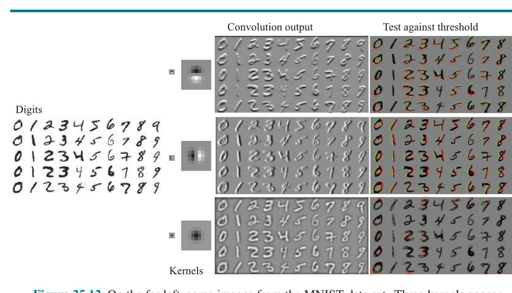
در حالی که آموزشِ CNN «خارج از جعبه» گاهی کار میکند، دانستنِ چند فنِ عملی کمک میکند. یکی از مهمترینها «افزایشِ داده» (Data Set Augmentation) است، که در آن مثالهای آموزشی کپی و کمی اصلاح میشوند. برای نمونه، ممکن است تصویری را بهصورتِ تصادفی کمی جابهجا، بچرخانید یا بکشید، یا رنگِ پیکسلها را بهصورتِ تصادفی کمی جابهجا کنید. معرفیِ این تغییرِ شبیهسازیشدهٔ دیدگاه یا نورپردازی به مجموعهٔ داده کمک میکند اندازهٔ مجموعهٔ داده افزایش یابد، هرچند البته مثالهای تازه با نمونههای اصلی همبستگیِ بالایی دارند. همچنین امکانِ استفاده از افزایش در زمانِ آزمون بهجای زمانِ آموزش هست. در این رویکرد، تصویر چند بار تکرار و اصلاح میشود (مثلاً با برشِ تصادفی) و ردهبند رویِ هر یک از تصاویرِ اصلاحشده اجرا میشود. سپس خروجیهای ردهبند از هر کپی برای رأیدادن برای تصمیمِ نهایی رویِ ردهٔ کلی استفاده میشوند.
وقتی تصاویرِ صحنه را ردهبندی میکنید، هر پیکسل میتواند کمککننده باشد. اما وقتی تصاویرِ اشیا را ردهبندی میکنید، برخی پیکسلها بخشی از شیء نیستند و بنابراین ممکن است حواسپرتکن باشند. برای نمونه، اگر گربهای رویِ تختِ سگ خوابیده باشد، میخواهیم ردهبند رویِ پیکسلهای گربه تمرکز کند، نه تخت. ردهبندهای تصویرِ مدرن این را خوب مدیریت میکنند و تصویری را بهعنوانِ «گربه» بهدقت ردهبندی میکنند، حتی اگر پیکسلهای کمی واقعاً رویِ گربه باشند. دو دلیل برای این هست. نخست، ردهبندهای مبتنی بر CNN در نادیدهگرفتنِ الگوهایی که تمایزگر نیستند خوباند. دوم، الگوهایی که خارج از شیء قرار دارند ممکن است تمایزگر باشند (مثلاً، اسباببازیِ گربه، قلادهای با زنگولهٔ کوچک، یا ظرفِ غذایِ گربه ممکن است در واقع کمک کنند بگوییم به گربه نگاه میکنیم). این اثر «زمینه» (Context) نامیده میشود. زمینه میتواند کمک کند یا آسیب بزند، بسته به اینکه کاملاً به مجموعهٔ داده و کاربردِ خاص بستگی دارد.
ردهبندهای تصویر پیشبینی میکنند چه چیزی در تصویر است—کلِ تصویر را بهعنوانِ تعلقداشتن به ردهای ردهبندی میکنند. آشکارسازهای شیء اشیای متعدد را در تصویر مییابند، گزارش میکنند هر شیء چه ردهای است، و همچنین گزارش میکنند هر شیء کجاست، با دادنِ «جعبهٔ محدودکننده» (Bounding Box) دورِ هر شیء. مجموعهٔ ردهها از پیش ثابت است. پس ممکن است بکوشیم همهٔ چهرهها، همهٔ خودروها یا همهٔ گربهها را تشخیص دهیم.
میتوانیم آشکارسازِ شیء را با نگاهکردن به «پنجرهٔ لغزان» (Sliding Window) کوچکی رویِ تصویرِ بزرگتر—مستطیلی—بسازیم. در هر نقطه، آنچه در پنجره میبینیم را با ردهبندِ CNN ردهبندی میکنیم. سپس ردهبندیهای پرامتیاز را میگیریم—گربهای اینجا و سگی آنجا—و پنجرههای دیگر را نادیده میگیریم. پس از کمی کار برای حلِ تعارضها، مجموعهٔ نهاییِ اشیا را با مکانهایشان داریم. هنوز چند جزئیات برای حل هست:
بیایید با دقتِ بیشتری به مسئلهٔ تصمیمگیری دربارهٔ اینکه به کدام پنجرهها نگاه کنیم بپردازیم. جستجویِ همهٔ پنجرههای ممکن کارآمد نیست—در تصویرِ n×n پیکسلی O(n⁴) پنجرهٔ مستطیلیِ ممکن هست. اما میدانیم پنجرههایی که اشیا را شاملاند تمایل به رنگ و بافتِ کاملاً منسجمی دارند. از سوی دیگر، پنجرههایی که شیء را نصف میکنند ناحیهها یا لبههایی دارند که از کنارِ پنجره میگذرند. پس منطقی است سازوکاری داشته باشیم که «شیءبودگی» (Objectness) را امتیاز میدهد—آیا جعبهای شیئی در آن دارد، مستقل از اینکه آن شیء چیست.¹ میتوانیم جعبههایی را که به نظر میرسد شیئی در آنهاست بیابیم، و سپس شیء را فقط برای همان جعبههایی که آزمونِ شیءبودگی را پاس میکنند ردهبندی کنیم.
شبکهای که ناحیههای با شیء را مییابد «شبکهٔ پیشنهادِ ناحیه» (Regional Proposal Network یا RPN) نامیده میشود. آشکارسازِ شیءِ شناختهشدهٔ Faster RCNN مجموعهٔ بزرگی از جعبههای محدودکننده را بهعنوانِ نقشهای با اندازهٔ ثابت رمز میکند. سپس شبکهای میسازد که میتواند برای هر جعبه امتیازی پیشبینی کند، و این شبکه را چنان آموزش میدهد که امتیاز وقتی جعبه شیئی دارد بزرگ و در غیرِ این صورت کوچک باشد. رمزکردنِ جعبهها بهعنوانِ نقشه سرراست است. جعبههای بهمرکزیتِ نقطههای سراسرِ تصویر را در نظر میگیریم؛ نیازی به درنظرگرفتنِ هر نقطهٔ ممکن نیست (زیرا حرکتِ یک پیکسلی احتمالاً ردهبندی را تغییر نمیدهد)؛ انتخابِ خوب گامی (آفستِ بینِ نقطههای مرکزی) ۱۶ پیکسل است. برای هر نقطهٔ مرکزی چند جعبهٔ ممکن، به نامِ «جعبهٔ لنگر» (Anchor Box)، در نظر میگیریم. Faster RCNN از نه جعبه استفاده میکند: اندازههای کوچک، متوسط و بزرگ؛ و نسبتهای ابعادِ بلند، پهن و مربع. از نظرِ معماریِ شبکهٔ عصبی، بلوکی سهبعدی بساز که هر مکانِ فضاییِ بلوک دو بُعد برای نقطهٔ مرکزی و یک بُعد برای نوعِ جعبه داشته باشد. حالا هر جعبهای با امتیازِ شیءبودگیِ بهاندازهٔ کافی خوب «ناحیهٔ موردِ علاقه» (Region of Interest یا ROI) نامیده میشود و باید توسط ردهبندی بررسی شود. اما ردهبندهای CNN تصاویرِ با اندازهٔ ثابت را ترجیح میدهند، و جعبههایی که آزمونِ شیءبودگی را پاس میکنند در اندازه و شکل متفاوتاند. نمیتوانیم جعبهها را وادار کنیم تعدادِ پیکسلِ یکسان داشته باشند، اما میتوانیم آنها را وادار کنیم تعدادِ ویژگیِ یکسان داشته باشند، با نمونهبرداری از پیکسلها برای استخراجِ ویژگی، فرایندی که «تجمیعِ ROI» (ROI Pooling) نامیده میشود. این نقشهٔ ویژگیِ با اندازهٔ ثابت سپس به ردهبند داده میشود.
حالا برای مسئلهٔ تصمیمگیری دربارهٔ اینکه کدام پنجرهها گزارش شوند. فرض کنید به پنجرههای با اندازهٔ 32×32 با گامِ ۱ نگاه میکنیم: هر پنجره فقط یک پیکسل از پنجرهٔ قبلی آفست دارد. پنجرههای مشابهِ بسیاری خواهد بود که باید امتیازهای مشابهی داشته باشند. اگر همهٔ آنها امتیازی بالای آستانه داشته باشند، نمیخواهیم همه را گزارش کنیم، زیرا به احتمالِ بسیار به نماهای کمی متفاوتِ همان شیء اشاره میکنند. از سوی دیگر، اگر گام بیشازحد بزرگ باشد، ممکن است شیئی درونِ هیچ پنجرهای نباشد و از دست برود. در عوض، میتوانیم از الگوریتمِ حریصانهای به نامِ «سرکوبِ غیربیشینه» (Non-Maximum Suppression) استفاده کنیم. نخست، فهرستِ مرتبشدهای از همهٔ پنجرههای با امتیازِ بالایِ آستانه بساز. سپس، تا وقتی پنجرههایی در فهرست هست، پنجرهٔ با بیشترین امتیاز را انتخاب و آن را بهعنوانِ شاملِ شیء بپذیر؛ همهٔ پنجرههای عمدتاً همپوشانِ دیگر را از فهرست دور بریز.
سرانجام، مسئلهٔ گزارشِ مکانِ دقیقِ اشیا را داریم. فرض کنید پنجرهای با امتیازِ بالا داریم که از سرکوبِ غیربیشینه عبور کرده. بعید است این پنجره دقیقاً در جایِ درست باشد (به یاد داشته باشید، به تعدادِ نسبتاً کمی پنجره با تعدادِ کمی اندازهٔ ممکن نگاه کردیم). از بازنماییِ ویژگیِ محاسبهشده توسط ردهبند برای پیشبینیِ بهبودهایی استفاده میکنیم که پنجره را به جعبهٔ محدودکنندهٔ درست میتراشند، گامی که «رگرسیونِ جعبهٔ محدودکننده» (Bounding Box Regression) نامیده میشود.
ارزیابیِ آشکارسازهای شیء نیاز به مراقبت دارد. نخست به مجموعهٔ آزمون نیاز داریم: مجموعهای از تصاویر با هر شیءِ تصویر که با برچسبِ ردهٔ حقیقتِ زمینی و جعبهٔ محدودکننده علامت خورده. معمولاً، جعبهها و برچسبها توسط انسانها تأمین میشوند. سپس هر تصویر را به آشکارسازِ شیء میدهیم و خروجیاش را با حقیقتِ زمینی مقایسه میکنیم. باید مایل باشیم جعبههایی را بپذیریم که چند پیکسل آفستاند، زیرا جعبههای حقیقتِ زمینی کامل نخواهند بود. امتیازِ ارزیابی باید «بازیابی» (یافتنِ همهٔ اشیایی که هستند) و «دقت» (نیافتنِ اشیایی که نیستند) را متوازن کند.
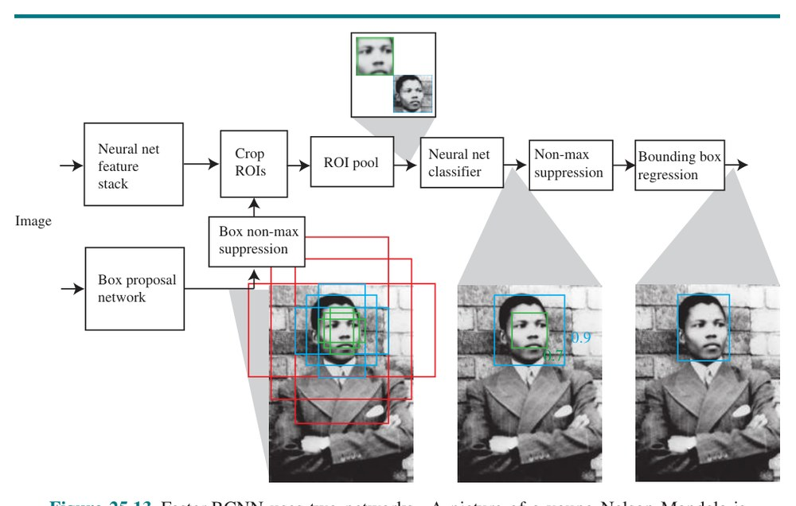
تصاویر تصویری دوبعدی از جهانِ سهبعدی نشان میدهند. اما این تصویرِ دوبعدی غنی از سرنخهایی دربارهٔ جهانِ سهبعدی است. یک نوعِ سرنخ وقتی رخ میدهد که تصاویرِ متعددی از همان جهان داریم و میتوانیم نقطهها را بینِ تصاویر تطبیق دهیم. نوعِ دیگرِ سرنخ درونِ یک تصویرِ تکی در دسترس است.
دو تصویر از اشیای جهانِ سهبعدی به چند دلیل از یکی بهترند:
مسئلهٔ کلیدی برقرارکردنِ این است که کدام نقطهٔ نمایِ نخست با کدام نقطهٔ نمایِ دوم متناظر است. توصیفهای دقیقِ ظاهرِ محلیِ نقطهای با استفاده از ویژگیهای بافتِ ساده (مانندِ آنهای بخشِ ۲۵.۳.۲) اغلب برای تطبیقِ نقطهها کافیاند. برای نمونه، در صحنهای از ترافیکِ خیابان، ممکن است فقط یک چراغِ سبز در دو تصویرِ گرفتهشده از صحنه دیده شود؛ سپس میتوانیم فرضیه دهیم اینها با یکدیگر متناظرند. هندسهٔ نماهای دوربینِ متعدد بسیار خوب فهمیده شده (اما متأسفانه برای شرحدادنِ اینجا بیشازحد پیچیده است). این نظریه قیدهای هندسیای تولید میکند که کدام نقطهٔ یک تصویر میتواند با کدام نقطهٔ تصویرِ دیگر تطبیق شود. قیدهای دیگر را میتوان با استدلال دربارهٔ همواریِ سطوحِ بازسازیشده بهدست آورد.
دو راه برای گرفتنِ نماهای متعدد از یک صحنه هست. یکی داشتنِ دو دوربین یا دو چشم است (بخش ۲۵.۶.۲). دیگری حرکتکردن است (بخش ۲۵.۶.۳). اگر بیش از دو نما داشته باشید، میتوانید هم هندسهٔ جهان و هم جزئیاتِ نما را بسیار دقیق بازیابی کنید. بخش ۲۵.۷.۳ برخی کاربردهای این فناوری را بحث میکند.
بیشترِ مهرهداران دو چشم دارند. این برای افزونگی در صورتِ ازدسترفتنِ چشمی مفید است، اما بهروشهای دیگر نیز کمک میکند. بیشترِ شکارها چشمهایی در کنارِ سر دارند تا میدانِ دیدِ وسیعتری ممکن شود. شکارچیان چشمهایی در جلو دارند که آنها را قادر به استفاده از «استریوپسیسِ دوچشمی» (Binocular Stereopsis) میکند. هر دو انگشتِ اشاره را جلوی صورتتان بگیرید، با یک چشمِ بسته، و آنها را طوری تنظیم کنید که انگشتِ جلویی انگشتِ دیگر را در دیدِ چشمِ باز مسدود کند. حالا چشمها را عوض کنید؛ باید متوجه شوید انگشتان نسبت به یکدیگر جابهجا شدهاند. این جابهجاییِ موقعیت از نمایِ چپ به نمایِ راست «اختلافِ منظر» (Disparity) نامیده میشود. در انتخابِ درستِ سامانهٔ مختصات، اگر تصاویرِ چپ و راستِ شیئی را در عمقی رویِ هم قرار دهیم، شیء در تصویرِ رویهمنهاده بهصورتِ افقی جابهجا میشود، و اندازهٔ جابهجایی معکوسِ عمق است. این را میتوانید در شکل ۲۵.۱۴ ببینید، که نزدیکترین نقطهٔ هرم در تصویرِ راست به چپ و در تصویرِ چپ به راست جابهجا شده.
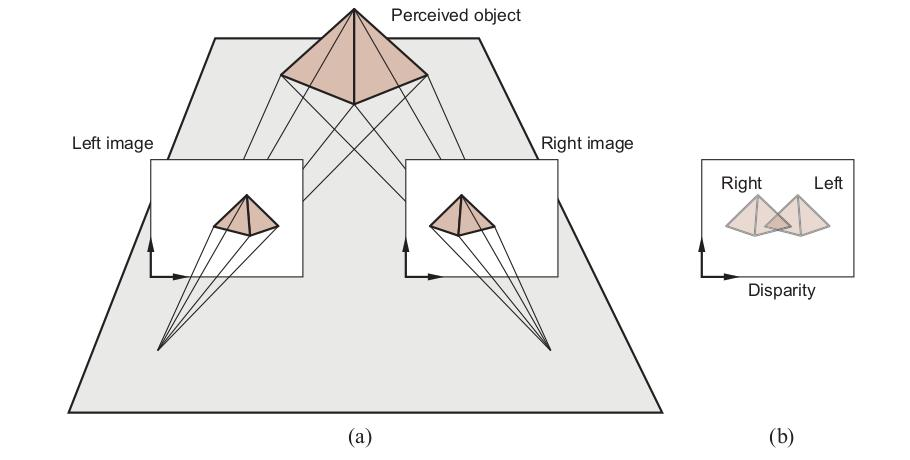
برای اندازهگیریِ اختلافِ منظر باید مسئلهٔ تطبیق را حل کنیم: کدام نقطهٔ تصویرِ راست با کدام نقطهٔ تصویرِ چپ متناظر است؟ برای دوربینِ ترجمهشده بهموازاتِ محورِ x، تطبیق از دوربینِ راست به دوربینِ چپ فقط جابهجایی در طولِ محورِ x به مقدارِ b، «خطِ مبنا» (Baseline) است. میتوانیم از معادلههای جریانِ نوریِ بخشِ ۲۵.۳.۳ استفاده کنیم، اگر این را ناشی از بردارِ ترجمهٔ T که برای زمانِ δt عمل میکند بدانیم، با Tₓ = b/δt و T_y = T_z = 0. اختلافِ منظرِ افقی و عمودی توسط مؤلفههای جریانِ نوری، ضربشده در گامِ زمانیِ δt، داده میشوند: H = vₓ δt، V = v_y δt.
با انجامِ جایگزینیها، نتیجه را میگیریم که H = b/Z، V = 0. به بیانِ دیگر، اختلافِ منظرِ افقی برابرِ نسبتِ خطِ مبنا به عمق است، و اختلافِ منظرِ عمودی صفر است. میتوانیم عمقِ Z را با توجه به دانستنِ b و قابلیتِ اندازهگیریِ H بازیابی کنیم.
تحتِ شرایطِ دیدِ معمولی، انسانها «خیره» میشوند؛ یعنی نقطهای در صحنه هست که محورهای نوریِ دو چشم در آن تلاقی میکنند. شکل ۲۵.۱۵ دو چشمِ خیرهشده به نقطهٔ P₀ را نشان میدهد، که در فاصلهٔ Z از نقطهٔ میانیِ چشمهاست. برای راحتی، اختلافِ منظرِ زاویهای، اندازهگیریشده بر حسبِ رادیان، را محاسبه میکنیم. اختلافِ منظر در نقطهٔ خیرگیِ P₀ صفر است. برای نقطهٔ دیگری مانندِ P در صحنه که δZ دورتر است، میتوانیم جابهجاییهای زاویهایِ تصاویرِ چپ و راستِ P را محاسبه کنیم، که آنها را P_L و P_R مینامیم. اگر هر یک از اینها با زاویهٔ δθ/2 نسبت به P₀ جابهجا شده باشد، آنگاه جابهجایی بینِ P_L و P_R، که اختلافِ منظرِ P است، فقط δθ است. از شکل ۲۵.۱۵، tanθ = (b/2)/Z و tan(θ − δθ/2) = (b/2)/(Z+δZ)، اما برای زاویههای کوچک، tanθ ≈ θ، پس δθ/2 = b/2Z − b/2(Z+δZ) ≈ bδZ/2Z² و، چون اختلافِ منظرِ واقعی δθ است، داریم:
Disparity = b δZ / Z²در انسانها، خطِ مبنای b حدودِ ۶ سانتیمتر است. فرض کنید Z حدودِ ۱۰۰ سانتیمتر است و کوچکترین δθِ قابلِ تشخیص (متناظر با اندازهٔ پیکسلِ تکی) حدودِ ۵ ثانیهٔ کمان است، که δZ برابرِ 0.4 میلیمتر میدهد. برای Z = 30 سانتیمتر، مقدارِ بهشکلِ چشمگیری کوچکِ δZ = 0.036 میلیمتر میگیریم. یعنی، در فاصلهٔ ۳۰ سانتیمتری، انسانها میتوانند عمقهایی را که بهاندازهٔ 0.036 میلیمتر تفاوت دارند تشخیص دهند، که ما را قادر به نخکردنِ سوزن و مانندِ آن میکند.
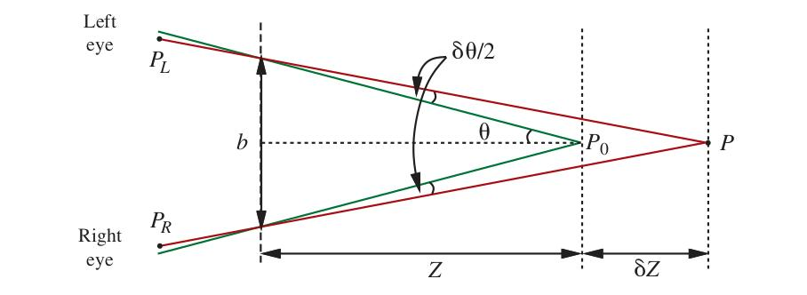
فرض کنید دوربینی در صحنه حرکت میکند. شکل ۲۵.۱۴ را بگیر و تصویرِ چپ را «زمانِ t» و تصویرِ راست را «زمانِ t+1» برچسب بزن. هندسه تغییر نکرده، پس همهٔ مطالبِ بحثِ استریوپسیس وقتی دوربین حرکت میکند نیز برقرار است. آنچه در آن بخش اختلافِ منظر نامیدیم اکنون حرکتِ ظاهری در تصویر در نظر گرفته میشود و «جریانِ نوری» نامیده میشود. این منبعِ اطلاعاتی هم برای حرکتِ دوربین و هم برای هندسهٔ صحنه است.
برای فهمِ این، معادلهای را بیان میکنیم (بدونِ اثبات) که جریانِ نوری را به سرعتِ انتقالیِ بینندهٔ T و عمقِ صحنه مرتبط میکند. میدانِ جریانِ نوری میدانِ برداریِ سرعتها در تصویر، (vₓ(x,y), v_y(x,y))، است. عبارتهای این مؤلفهها، در چارچوبِ مختصاتی بهمرکزیتِ دوربین و با فرضِ فاصلهٔ کانونیِ f = 1، بهصورتِ زیرند:
vₓ(x, y) = (−Tₓ + x T_z) / Z(x, y)
v_y(x, y) = (−T_y + y T_z) / Z(x, y)که Z(x,y) مختصاتِ z (یعنی عمقِ) نقطهٔ صحنهٔ متناظر با نقطهٔ تصویرِ (x,y) است. توجه کنید هر دو مؤلفهٔ جریانِ نوری، vₓ(x,y) و v_y(x,y)، در نقطهٔ x = Tₓ/T_z، y = T_y/T_z صفرند. این نقطه «کانونِ گسترش» (Focus of Expansion) میدانِ جریان نامیده میشود. فرض کنید مبدأ را در صفحهٔ x–y به کانونِ گسترش منتقل کنیم؛ آنگاه عبارتهای جریانِ نوری شکلِ بهویژه سادهای به خود میگیرند. (x′,y′) مختصاتِ تازه باشد که با x′ = x − Tₓ/T_z، y′ = y − T_y/T_z تعریف میشود. آنگاه:
vₓ(x′, y′) = x′ T_z / Z(x′, y′)
v_y(x′, y′) = y′ T_z / Z(x′, y′)توجه کنید ابهامِ عاملِ مقیاس در اینجا هست (که دلیلِ بیآزاربودنِ فرضِ فاصلهٔ کانونیِ f = 1 همین است). اگر دوربین دو برابر سریعتر حرکت میکرد، و هر شیءِ صحنه دو برابر بزرگتر و در فاصلهٔ دو برابرِ دوربین بود، میدانِ جریانِ نوری دقیقاً یکسان میبود. اما همچنان میتوانیم اطلاعاتِ کاملاً مفیدی استخراج کنیم.
حتی یک تصویرِ تکی مجموعهٔ غنیای از اطلاعات دربارهٔ جهانِ سهبعدی فراهم میکند. این حتی اگر تصویر فقط طراحی خطی باشد نیز صادق است. طراحیهای خطی دانشمندانِ بینایی را مجذوب کردهاند، زیرا مردم حسِ شکل و چیدمانِ سهبعدی دارند، حتی اگر به نظر میرسد طراحی اطلاعاتِ بسیار کمی برای انتخاب از مجموعهٔ عظیمِ صحنههایی که میتوانستند همان طراحی را تولید کنند دارد. انسداد یکی از منابعِ کلیدیِ اطلاعات است: اگر شواهدی در تصویر هست که شیئی شیءِ دیگر را مسدود میکند، آنگاه شیءِ مسدودکننده به چشم نزدیکتر است.
در تصاویرِ صحنههای واقعی، بافت سرنخِ قویِ ساختارِ سهبعدی است. بخش ۲۵.۳.۲ بیان کرد بافت الگویِ تکراریِ تکسِلهاست. هرچند توزیعِ تکسِلها ممکن است رویِ اشیای صحنه یکنواخت باشد—برای نمونه، سنگریزههای ساحل—ممکن است در تصویر یکنواخت نباشد—سنگریزههای دورتر کوچکتر از سنگریزههای نزدیکتر ظاهر میشوند. بهعنوانِ مثالِ دیگر، به تکهای پارچهٔ خالخالی فکر کنید. همهٔ خالها رویِ پارچه همان اندازه و شکلاند، اما در نمایِ پرسپکتیوی برخی خالها بهدلیلِ کوتاهنمایی بیضیاند. روشهای مدرن با یادگیریِ نگاشت از تصاویر به ساختارِ سهبعدی (بخش ۲۵.۷.۴) از این سرنخها بهره میبرند، بهجای استدلالِ مستقیم دربارهٔ ریاضیاتِ زیرینِ بافت.
سایهروشن—تغییرِ شدتِ نورِ دریافتی از بخشهای متفاوتِ سطحِ صحنه—توسط هندسهٔ صحنه و توسط ویژگیهای بازتابِ سطوح تعیین میشود. شواهدِ بسیار خوبی هست که سایهروشن سرنخی برای شکلِ سهبعدی است. استدلالِ فیزیکی آسان است. از مدلِ فیزیکیِ بخش ۲۵.۲.۴ میدانیم اگر نرمالِ سطح به سمتِ منبعِ نور اشاره کند، سطح روشنتر است، و اگر به دور اشاره کند، سطح تاریکتر است. این استدلال اگر بازتابِ سطح شناختهشده نباشد و میدانِ روشنایی یکنواخت نباشد پیچیدهتر میشود، اما به نظر میرسد انسانها قادر به گرفتنِ ادراکِ مفیدی از شکل از سایهروشناند. ما بهشکلِ ناامیدکنندهای دربارهٔ الگوریتمهای انجامِ این کار کم میدانیم.
اگر شیءِ آشنایی در تصویر باشد، ظاهرش بهشدت به «وضعیت» (Pose)اش، یعنی موقعیت و جهتاش نسبت به بیننده، بستگی دارد. الگوریتمهای سرراستی برای بازیابیِ وضعیت از تناظرهای بینِ نقطههای رویِ شیء و نقطههای رویِ مدلِ شیء هست. بازیابیِ وضعیتِ شیءِ شناختهشده کاربردهای بسیاری دارد. برای نمونه، در تکلیفِ دستکاریِ صنعتی، بازویِ ربات نمیتواند شیء را بردارد تا وضعیت شناخته شود. کاربردهای جراحیِ رباتیک به محاسبهٔ دقیقِ تبدیلهای بینِ موقعیتِ دوربین و موقعیتهای ابزارِ جراحی و بیمار بستگی دارند (تا تبدیلِ موقعیتِ ابزار به موقعیتِ بیمار بهدست آید).
رابطههای فضاییِ بینِ اشیا سرنخِ مهمِ دیگری است. اینجا مثالی است. همهٔ عابرانِ پیاده تقریباً همان قد را دارند، و تمایل دارند رویِ صفحهٔ زمین بایستند. اگر بدانیم افق در تصویر کجاست، میتوانیم عابرانِ پیاده را بر اساسِ فاصله تا دوربین رتبهبندی کنیم. این کار میکند، زیرا میدانیم پاهایشان کجاست، و عابرانی که پاهایشان در تصویر به افق نزدیکتر است از دوربین دورترند، و بنابراین باید در تصویر کوچکتر باشند. این بدانمعناست میتوانیم برخی پاسخهای آشکارساز را رد کنیم—اگر آشکارسازی عابری را بیابد که در تصویر بزرگ است و پاهایش نزدیکِ افق، عابری عظیمالجثه یافته که وجود ندارد، پس آشکارساز اشتباه میکند. بهنوبهٔ خود، آشکارسازِ عابرِ نسبتاً قابلِاعتمادی قادر به تولیدِ برآوردهایی از افق است، اگر چند عابر در فواصلِ متفاوت از دوربین در صحنه باشند. این بهدلیلِ آن است که مقیاسِ نسبیِ عابران سرنخی برای جایِ افق است. پس میتوانیم برآوردِ افق را از آشکارساز استخراج کنیم، سپس از این برآورد برای هرسِ اشتباههای آشکارسازِ عابر استفاده کنیم.
در اینجا دامنهای از کاربردهای بیناییِ رایانهای را مرور میکنیم. اکنون ابزارها و جعبهابزارهای بیناییِ رایانهایِ قابلِاعتمادِ بسیاری هست، پس دامنهٔ کاربردهای موفق و مفید خارقالعاده است. بسیاری در خانه توسط علاقهمندان برای اهدافِ خاص توسعه مییابند، که گواهِ این است روشها چقدر قابلِ استفادهاند و چقدر تأثیر دارند. (برای نمونه، علاقهمندی درِ حیوانِ خانگیِ مبتنی بر تشخیصِ شیءِ عالیای ساخت که اگر گربه موشِ مردهای میآورد از ورودش جلوگیری میکند—یک جستجویِ وب آن را برایتان پیدا میکند.)
اگر میتوانستیم سامانههایی بسازیم که با تحلیلِ ویدئو بفهمند مردم چه میکنند، میتوانستیم رابطهای انسان-رایانهای بسازیم که مردم را تماشا میکنند و به رفتارشان واکنش نشان میدهند. با این رابطها، میتوانستیم: ساختمانها و مکانهای عمومی را بهتر طراحی کنیم، با جمعآوری و استفاده از دادهٔ آنچه مردم در ملأ عام انجام میدهند؛ سامانههای نظارتِ امنیتیِ دقیقتر و کممزاحمتر بسازیم؛ مفسرانِ ورزشیِ خودکار بسازیم؛ سایتهای ساختمانی و محلهای کار را با تولیدِ هشدار وقتی مردم و ماشینها بهشکلِ خطرناکی نزدیک میشوند ایمنتر کنیم؛ بازیهای رایانهای بسازیم که بازیکن را وادار به بلندشدن و حرکتکردن میکنند؛ و با مدیریتِ گرما و نورِ ساختمان برای تطبیق با محلِ حضورِ ساکنان و آنچه انجام میدهند، انرژی صرفهجویی کنیم.
وضعیتِ هنر برای برخی مسائل اکنون فوقالعاده قوی است. روشهایی هست که میتوانند مکانِ مفصلهای بدنِ شخص را در تصویر بسیار دقیق پیشبینی کنند. برآوردهای کاملاً خوبِ پیکربندیِ سهبعدیِ بدنِ آن شخص دنبال میشود (شکل ۲۵.۱۶ را ببینید). این کار میکند، زیرا تصاویرِ بدن تمایل به اثرهای پرسپکتیویِ ضعیف دارند، و قطعاتِ بدن در طول چندان تغییر نمیکنند، پس کوتاهنماییِ قطعهٔ بدن در تصویر سرنخِ خوبی برای زاویهٔ بینِ آن و صفحهٔ دوربین است. با حسگذارِ عمق، این برآوردها را میتوان بهاندازهٔ کافی سریع ساخت تا در رابطهای بازیِ رایانهای بنا شوند.
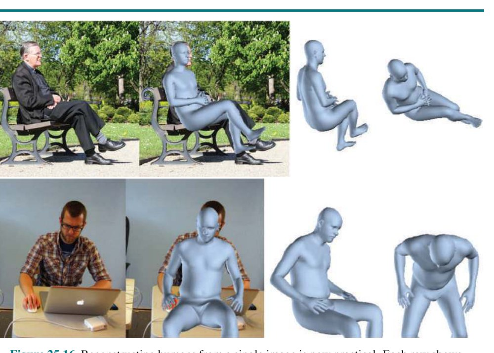
ردهبندیِ آنچه مردم انجام میدهند سختتر است. ویدئویی که رفتارهای نسبتاً ساختیافتهای مانندِ باله، ژیمناستیک یا تایچی نشان میدهد، که در آنها واژگانِ کاملاً خاصی هست که به فعالیتهای بسیار دقیقاً ترسیمشده رویِ پسزمینههای ساده اشاره میکنند، بهراحتی قابلِبرخورد است. نتایجِ خوب را میتوان با دادهٔ برچسبخوردهٔ زیاد و شبکهٔ عصبیِ پیچشیِ مناسبی بهدست آورد.
با این حال، اثباتِ اینکه روشها واقعاً کار میکنند میتواند دشوار باشد، زیرا آنها چنان شدید به زمینه تکیه میکنند. برای نمونه، ردهبندی که دنبالههای «شنا» را خیلی خوب برچسب میزند ممکن است فقط آشکارسازِ استخرِ شنا باشد، که برای (مثلاً) شناگرانِ رودخانه کار نمیکند. مسائلِ عمومیتر باز باقی میمانند—برای نمونه، چگونه مشاهدههای بدن و اشیای نزدیک را به هدفها و نیاتِ مردمِ متحرک پیوند دهیم. یکی از منابعِ دشواری این است که رفتارهای مشابه متفاوت به نظر میرسند، و رفتارهای متفاوت مشابه، چنانکه شکل ۲۵.۱۷ نشان میدهد. دشواریِ دیگر ناشی از مقیاسِ زمانی است. آنچه شخصی انجام میدهد بهشدت به مقیاسِ زمانی بستگی دارد، چنانکه شکل ۲۵.۱۸ نشان میدهد. اثرِ مهمِ دیگرِ نشاندادهشده در آن شکل این است که رفتار ترکیب میشود—چند رفتارِ بازشناسیشده ممکن است برای تشکیلِ رفتارِ سطحبالاترِ تکی مانندِ آمادهکردنِ تنقلات ترکیب شوند.
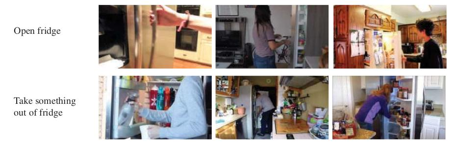
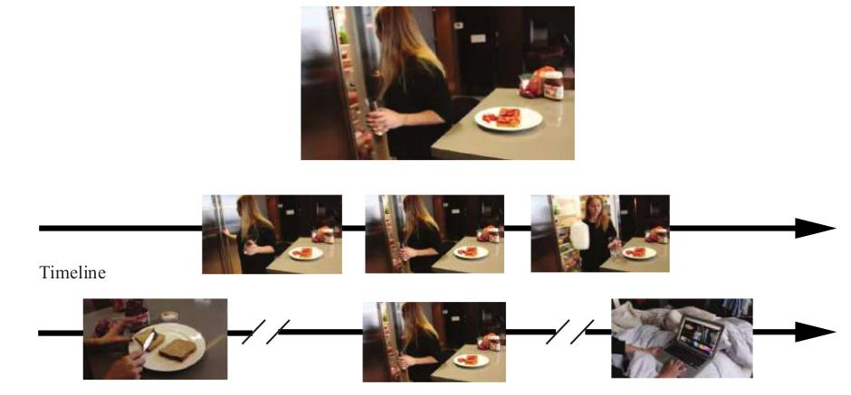
همچنین ممکن است رفتارهای نامربوط همزمان در جریان باشند، مانندِ خواندنِ آهنگ هنگامِ آمادهکردنِ تنقلات. چالشی این است که واژگانِ مشترکی برای تکههای رفتار نداریم. مردم تمایل دارند فکر کنند نامِ رفتارهای بسیاری را میدانند، اما نمیتوانند فهرستِ بلندی از چنین واژههایی را در صورتِ تقاضا تولید کنند. این مجموعههای دادهٔ رفتارهای با برچسبِ پیوسته را سختتر میکند. ردهبندهای آموختهشده تضمین میشوند فقط اگر دادهٔ آموزشی و آزمون از همان توزیع بیایند خوب رفتار کنند. هیچ راهی برای بررسیِ اعمالشدنِ این قید بر تصاویر نداریم، اما بهصورتِ تجربی مشاهده میکنیم ردهبندهای تصویر و آشکارسازهای شیء خیلی خوب کار میکنند. اما برای دادهٔ فعالیت، رابطهٔ بینِ دادهٔ آموزشی و آزمون بیاعتمادتر است، زیرا مردم در بافتهای بسیار کارهای بسیاری میکنند. برای نمونه، فرض کنید آشکارسازِ عابرِ پیادهای داریم که رویِ مجموعهٔ دادهٔ بزرگی خوب عمل میکند. پدیدههای نادری وجود خواهند داشت (مثلاً، مردمِ سوار بر تکچرخه) که در مجموعهٔ آموزشی ظاهر نمیشوند، پس نمیتوانیم با قطعیت بگوییم آشکارساز در چنین مواردی چگونه کار خواهد کرد. چالش اثباتِ این است که آشکارساز هرچه عابرانِ پیاده انجام دهند ایمن است، که برای نظریههای کنونیِ یادگیری دشوار است.
بسیاری از مردم تصاویر و ویدئوها را در اینترنت میسازند و به اشتراک میگذارند. دشواری یافتنِ آنچه میخواهید است. معمولاً، مردم میخواهند با واژهها جستجو کنند (بهجای، مثلاً، طرحهای نمونه). چون بیشترِ تصاویر با واژههای الصاقشده نمیآیند، طبیعی است بکوشیم «سامانههای برچسبگذاری» (Tagging System) بسازیم که تصاویر را با واژههای مربوط برچسب میزنند. ماشینآلاتِ زیرین سرراست است—روشهای ردهبندیِ تصویر و تشخیصِ شیء را اعمال میکنیم و تصویر را با واژههای خروجی برچسب میزنیم. اما برچسبها توصیفِ جامعی از آنچه در تصویر رخ میدهد نیستند. مهم است چه کسی چه میکند، و برچسبها این را درنمیگیرند. برای نمونه، برچسبزدنِ تصویری از گربهای در خیابان با ردههای شیءِ «گربه»، «خیابان»، «سطلِ زباله» و «استخوانِ ماهی» اطلاعاتِ اینکه گربه استخوانِ ماهی را از سطلِ زبالهٔ بازِ خیابان بیرون میکشد را حذف میکند.
بهعنوانِ جایگزینی برای برچسبگذاری، ممکن است «سامانههای شرحنویسی» (Captioning System) بسازیم—سامانههایی که شرحی از یک یا چند جمله مینویسند که تصویر را توصیف میکند. ماشینآلاتِ زیرین باز سرراست است—شبکهٔ پیچشی (برای بازنماییِ تصویر) را به شبکهٔ عصبیِ بازگشتی یا شبکهٔ ترنسفورمر (برای تولیدِ جملهها) جفت کن، و نتیجه را با مجموعهٔ دادهای از تصاویرِ شرحدار آموزش بده. تصاویرِ شرحدارِ بسیاری در اینترنت در دسترساند؛ مجموعههای دادهٔ ویرایششده از کارِ انسانی برای افزودنِ شرحهای اضافی به هر تصویر استفاده میکنند تا تغییرِ زبانِ طبیعی را دربرگیرند. برای نمونه، مجموعهٔ دادهٔ COCO (اشیای رایج در زمینه) مجموعهٔ جامعی از بیش از ۲۰۰٬۰۰۰ تصویر است که با پنج شرح بهازایِ هر تصویر برچسب خوردهاند.
روشهای کنونیِ شرحنویسی از آشکارسازها برای یافتنِ مجموعهای از واژهها استفاده میکنند که تصویر را توصیف میکنند، و آن واژهها را به مدلِ دنبالهای میدهند که برای تولیدِ جمله آموزش دیده. سامانههای شرحنویسی ترکیبی از نتایجِ عالی و خطاهای شرمآور تولید میکنند (شکل ۲۵.۱۹ را ببینید).
سامانههای شرحنویسی میتوانند نادانیشان را با حذفِ ذکرِ جزئیاتی که نمیتوانند درست انجام دهند یا با استفاده از سرنخهای زمینهای برای حدس پنهان کنند. برای نمونه، سامانههای شرحنویسی تمایل به ضعف در شناساییِ جنسیتِ مردم در تصاویر دارند و اغلب بر مبنای آمارِ دادهٔ آموزشی حدس میزنند. این میتواند به خطاها بینجامد—مردان نیز خریدکردن را دوست دارند و زنان نیز اسنوبرد میکنند. یکی از راههای برقرارکردنِ اینکه آیا سامانه بازنماییِ خوبی از آنچه در تصویر رخ میدهد دارد، وادارکردنِ آن به پاسخدادن به پرسشهایی دربارهٔ تصویر است. این «پاسخگوییِ پرسشِ بصری» (Visual Question Answering یا VQA) است. جایگزین «گفتگوی بصری» (Visual Dialog) است، که به سامانه تصویری، شرحش و گفتگویی داده میشود. سامانه باید سپس به آخرین پرسشِ گفتگو پاسخ دهد. چنانکه شکل ۲۵.۲۰ نشان میدهد، بینایی فوقالعاده دشوار باقی میماند و سامانههای VQA اغلب خطا میکنند.
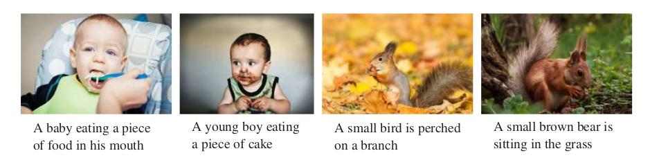
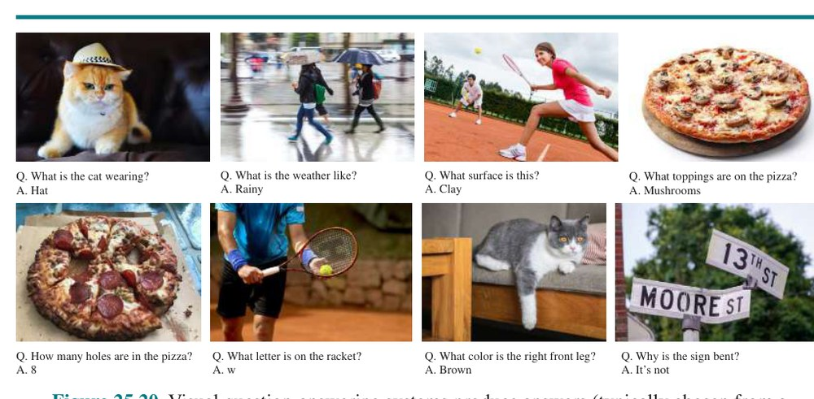
بازسازیِ مجموعهای از نقطهها از نماهای متعدد—که میتوانند از ویدئو یا از تجمیعِ عکسهای گردشگری بیایند—شبیهِ بازسازیِ نقطهها از دو نماست، اما تفاوتهای مهمی هست. کارِ بسیار بیشتری برای برقرارکردنِ تناظر بینِ نقطههای نماهای متفاوت لازم است، و نقطهها میتوانند واردِ نما شوند و از آن خارج شوند، که فرایندِ تطبیق و بازسازی را شلوغتر میکند. اما نماهای بیشتر قیدهای بیشتری بر بازسازی و بر پارامترهای نمایِ بازیابیشده میگذارند، پس معمولاً میتوان برآوردهای فوقالعاده دقیقی از هم موقعیتِ نقطهها و هم پارامترهای نما تولید کرد. بهطورِ تقریبی، بازسازی با تطبیقِ نقطهها رویِ جفتِ تصاویر پیش میرود، این تطبیقها را به گروههای تصاویر بسط میدهد، راهحلِ تقریبی هم برای هندسه و هم برای پارامترهای نما ارائه میکند، و سپس آن راهحل را صیقل میدهد. صیقلدادن به معنای کمینهکردنِ خطایِ بینِ نقطههای پیشبینیشده توسط مدل (هندسه و پارامترهای نما) و مکانهای ویژگیهای تصویر است. رویههای دقیق برای پوششِ کاملِ اینجا بیشازحد پیچیدهاند، اما اکنون بسیار خوب فهمیده و کاملاً قابلِاعتمادند.
همهٔ قیدهای هندسیِ رویِ تناظرها برای هر شکلِ قابلِتصورِ مفیدِ دوربین شناخته شدهاند. رویهها را میتوان برای برخورد با نماهایی که ارتوگرافیک نیستند؛ با نقطههایی که فقط در برخی نماها مشاهده میشوند؛ با پارامترهای ناشناختهٔ دوربین (مانندِ فاصلهٔ کانونی)؛ و برای بهرهبرداری از جستجوهای پیچیدهٔ گوناگون برای تناظرهای مناسب تعمیم داد. بازسازیِ دقیقِ مدلی از کلِ یک شهر از تصاویر عملی است. برخی کاربردها:
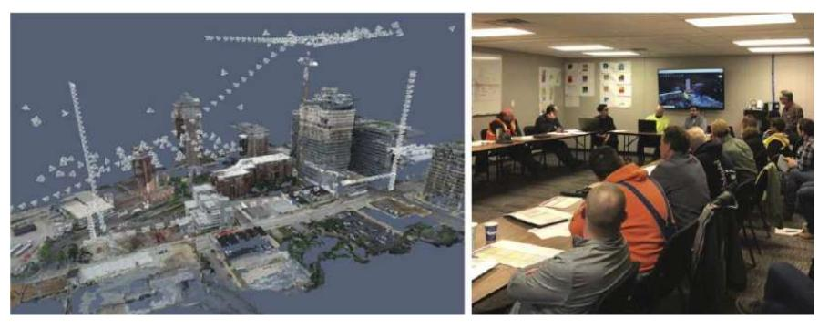
بازنماییهای هندسی اگر بخواهید حرکت کنید بهویژه مفیدند، زیرا میتوانند آشکار کنند کجایید، کجا میتوانید بروید و احتمالاً به چه چیزی برخورد خواهید کرد. اما همیشه راحت نیست برای تولیدِ مدلِ هندسی از نماهای متعدد استفاده کنیم. برای نمونه، وقتی در را باز میکنید و به اتاقی قدم میگذارید، چشمانتان برای بازیابیِ بازنماییِ خوبی از عمقِ اشیای دورِ آن سویِ اتاق بیشازحد به هم نزدیکاند. میتوانید سرتان را به عقب و جلو حرکت دهید، اما این وقتگیر و ناراحتکننده است.
جایگزین پیشبینیِ «نقشهٔ عمق» (Depth Map)—آرایهای که عمقِ هر پیکسلِ تصویر را میدهد، بهطورِ اسمی از دوربین—از یک تصویرِ تکی است. برای بسیاری از انواعِ صحنه، انجامِ دقیقِ این بهشکلِ شگفتآوری آسان است، زیرا نقشهٔ عمق ساختارِ کاملاً سادهای دارد. این بهویژه برای اتاقها و صحنههای داخلی بهطورِ کلی صادق است. مکانیکِ کار سرراست است. مجموعهٔ دادهای از تصاویر و نقشههای عمق بهدست میآوری، سپس شبکهای آموزش میدهی که نقشههای عمق را از تصاویر پیشبینی کند. انواعِ جالبی از تغییرِ مسئله قابلِ حلاند. مشکلِ نقشهٔ عمق این است که هیچچیز دربارهٔ پشتِ اشیا یا فضایِ پشتِ اشیا به شما نمیگوید. اما روشهایی هست که میتوانند پیشبینی کنند چه «وکسل»هایی (3D پیکسل) توسط اشیای شناختهشده اشغال شدهاند (هندسهٔ شیء شناختهشده است) و نقشهٔ عمق اگر شیئی حذف میشد چهشکل میشد (و بنابراین کجا میتوانید اشیا را پنهان کنید). این روشها کار میکنند، زیرا شکلهای اشیا کاملاً قویاً سبکپردازیشدهاند.
چنانکه در بخش ۲۵.۶.۴ دیدیم، بازیابیِ وضعیتِ شیءِ شناختهشده با استفاده از مدلِ سهبعدی سرراست است. حالا تصور کنید تصویرِ تکی از، مثلاً، گنجشکی میبینید. اگر در گذشته تصاویرِ بسیاری از پرندگانِ گنجشکمانند دیده باشید، میتوانید برآوردِ معقولی از هم وضعیتِ گنجشک و هم مدلِ هندسیاش از آن تصویرِ تکی بازسازی کنید. با استفاده از تصاویرِ گذشته، خانوادهٔ پارامتریکِ کوچکی از مدلهای هندسی برای پرندگانِ گنجشکمانند میسازید؛ سپس از رویهٔ بهینهسازی برای یافتنِ بهترین مجموعهٔ پارامترها و دیدگاهها برای تبیینِ تصویری که میبینید استفاده میشود. این استدلال برای تأمینِ بافتِ آن مدل نیز کار میکند، حتی برای بخشهایی که نمیتوانید ببینید (شکل ۲۵.۲۲).
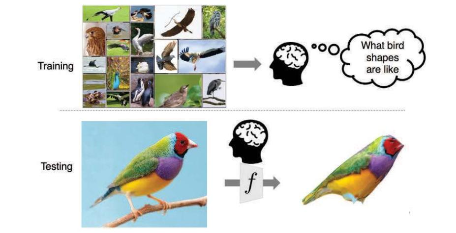
درجِ مدلهای گرافیکِ رایانهای در عکسها بهشکلی قانعکننده اکنون رایج است، چنانکه در شکل ۲۵.۲۳، که مجسمهای در عکسی از اتاق قرار داده شده. نخست نقشهٔ عمق و سپیدایی را برای عکس برآورد کن. سپس نورپردازیِ تصویر را با تطبیقِ آن با تصاویرِ دیگرِ با نورپردازیِ شناختهشده برآورد کن. شیء را در نقشهٔ عمقِ تصویر قرار بده، و جهانِ حاصل را با برنامهٔ رندرِ فیزیکی—ابزارِ استانداردِ گرافیکِ رایانهای—رندر کن. سرانجام، تصویرِ اصلاحشده را با تصویرِ اصلی ترکیب کن.
شبکههای عصبی را نیز میتوان برای انجامِ «تبدیلِ تصویر» (Image Transformation) آموزش داد: نگاشتِ تصاویرِ نوعِ X—برای نمونه، تصویرِ تار؛ تصویرِ هواییِ شهر؛ یا طراحیِ محصولِ تازه—به تصاویرِ نوعِ Y—برای نمونه، نسخهٔ غیرتارِ تصویر؛ نقشهٔ جاده؛ یا عکسِ محصول. این وقتی آسانتر است که دادهٔ آموزشی شاملِ جفتهای (X,Y) تصاویر باشد—در شکل ۲۵.۲۴ هر جفتِ نمونه تصویرِ هوایی و بخشِ نقشهٔ جادهٔ متناظر را دارد. زیانِ آموزش خروجیِ شبکه را با خروجیِ مطلوب مقایسه میکند، و همچنین مؤلفهٔ زیانی از شبکهٔ مولدِ تخاصمی (GAN) دارد که تضمین میکند خروجی انواعِ درستِ ویژگیها را برای تصاویرِ نوعِ Y دارد. چنانکه در بخشِ آزمونِ شکل ۲۵.۲۴ میبینیم، سامانههای اینگونه خیلی خوب عمل میکنند.
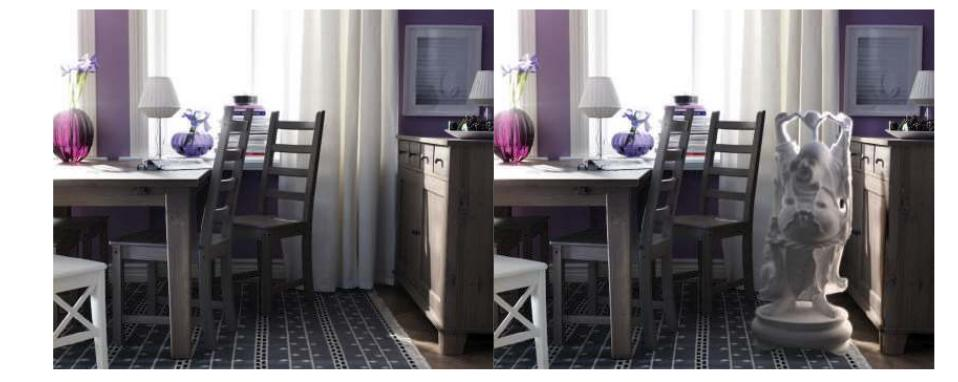
گاهی تصاویری که با یکدیگر جفت شدهاند نداریم، اما مجموعهٔ بزرگی از تصاویرِ نوعِ X (مثلاً، تصاویرِ اسب) و مجموعهٔ جداگانهای از نوعِ Y (مثلاً، تصاویرِ گورخر) داریم. هنرمندی را تصور کنید که مأمورِ ایجادِ تصویری از گورخری در حالِ دویدن در مزرعه است. هنرمند از تواناییِ انتخابِ دقیقاً تصویرِ درستِ اسب و سپس تبدیلِ خودکارِ اسب به گورخر توسط رایانه قدردانی میکرد (شکل ۲۵.۲۵). برای رسیدن به این، میتوانیم دو شبکهٔ تبدیل آموزش دهیم، با قیدِ اضافیای به نامِ «قیدِ چرخه» (Cycle Constraint). شبکهٔ نخست اسبها را به گورخرها نگاشت میکند؛ شبکهٔ دوم گورخرها را به اسبها؛ و قیدِ چرخه ایجاب میکند وقتی X را به Y و سپس به X نگاشت میکنید (یا Y به X به Y)، همان چیزی را بگیرید که با آن شروع کردهاید. باز، زیانهای GAN تضمین میکنند تصاویرِ اسب (یا گورخر) که شبکهها خروجی میدهند «شبیهِ» تصاویرِ واقعیِ اسب (یا گورخر) باشند.
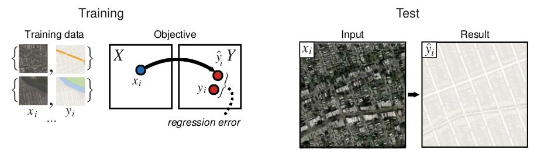
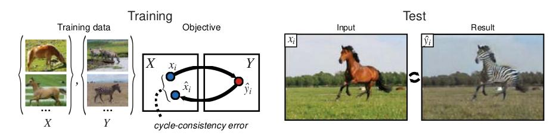
اثرِ هنریِ دیگری «انتقالِ سبک» (Style Transfer) نامیده میشود: ورودی شاملِ دو تصویر است—«محتوا» (برای نمونه، عکسی از گربه)؛ و «سبک» (برای نمونه، نقاشیِ انتزاعی). خروجی نسخهای از گربه است که در سبکِ انتزاعی رندر شده (شکل ۲۵.۲۶ را ببینید). بینشِ کلیدیِ حلِ این مسئله این است که اگر شبکهٔ عصبیِ پیچشیِ عمیقی (CNN) را بررسی کنیم که برای بازشناسیِ اشیا آموزش دیده (مثلاً، رویِ ImageNet)، مییابیم لایههای اولیه تمایل به بازنماییِ سبکِ تصویر دارند و لایههای پایانی محتوا را. p تصویرِ محتوا و s تصویرِ سبک باشد، و E(x) بردارِ فعالسازیهای لایهٔ اولیه رویِ تصویرِ x و L(x) بردارِ فعالسازیهای لایهٔ پایانی رویِ تصویرِ x باشد. سپس میخواهیم تصویری x تولید کنیم که محتوایی مشابهِ عکسِ خانه دارد، یعنی ‖L(x) − L(p)‖ را کمینه میکند، و همچنین سبکی مشابهِ نقاشیِ امپرسیونیستی دارد، یعنی ‖E(x) − E(s)‖ را کمینه میکند. از نزولِ گرادیان با تابعِ زیانی که ترکیبِ خطیِ این دو عامل است برای یافتنِ تصویری x استفاده میکنیم که زیان را کمینه میکند.
شبکههای مولدِ تخاصمی (GAN) میتوانند تصاویرِ واقعنمایِ تازهای خلق کنند که بیشترِ مردم را بیشترِ اوقات میفریبد. یکی از انواعِ تصویر «دیپفیک» (Deepfake) است—تصویری یا ویدئویی که شبیهِ شخصِ خاصی است، اما از مدلی تولید شده. برای نمونه، وقتی کری فیشر ۶۰ ساله بود، کپیِ تولیدشدهای از چهرهٔ ۱۹ سالهاش رویِ بدنِ بازیگرِ دیگری برای ساختِ Rogue One قرار داده شد. صنعتِ فیلم دیپفیکهای روزبهروز بهتر برای اهدافِ هنری میسازد، و پژوهشگران رویِ اقداماتِ متقابل برای تشخیصِ دیپفیکها کار میکنند، تا اثرهای مخربِ اخبارِ جعلی کاهش یابد.
تصاویرِ تولیدشده همچنین میتوانند برای حفظِ حریم خصوصی استفاده شوند. برای نمونه، مجموعههای دادهٔ تصویری در رویههای رادیولوژیک هست که برای پژوهشگران مفید میبود، اما بهدلیلِ محرمانگیِ بیمار منتشر نمیشود. مدلهای تصویرِ مولد میتوانند مجموعهٔ دادهٔ خصوصیِ تصاویر را بگیرند و مجموعهٔ دادهٔ مصنوعیِ قابلِاشتراکگذاری با پژوهشگران تولید کنند. این مجموعهٔ داده باید (الف) مانندِ مجموعهٔ دادهٔ آموزشی باشد؛ (ب) متفاوت؛ و (ج) قابلِ کنترل. اشعهٔ ایکسِ قفسهٔ سینه را در نظر بگیر. مجموعهٔ دادهٔ مصنوعی باید به این معنا مانندِ مجموعهٔ دادهٔ آموزشی باشد که هر تصویرِ منفرد رادیولوژیست را میفریبد و بسامدهای هر اثر باید درست باشد، تا رادیولوژیست از اینکه (مثلاً) ذاتالریه چند بار ظاهر میشود شگفتزده نشود. مجموعهٔ دادهٔ تازه باید متفاوت باشد، به این معنا که اطلاعاتِ شخصاً قابلِ شناسایی را آشکار نمیکند. مجموعهٔ دادهٔ تازه باید قابلِ کنترل باشد، تا بسامدهای اثرها بتوانند برای بازتابِ جوامعِ موردِ علاقه تنظیم شوند. برای نمونه، ذاتالریهها در سالمندان رایجتر از بزرگسالانِ جواناند. رسیدن به هر یک از این هدفها از نظرِ فنی دشوار است، اما مجموعههای دادهٔ تصویری ساخته شدهاند که رادیولوژیستهای شاغل را برخی از اوقات میفریبند (شکل ۲۵.۲۷).
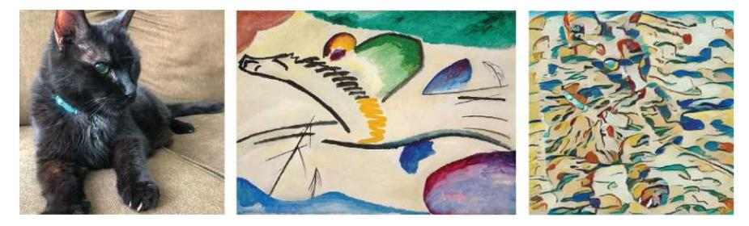
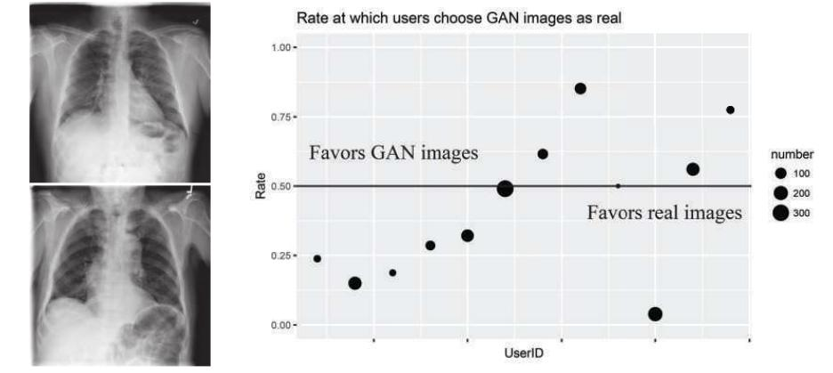
یکی از کاربردهای اصلیِ بینایی فراهمکردنِ اطلاعات هم برای دستکاریِ اشیا—برداشتنِ آنها، گرفتنِ آنها، چرخاندنِ آنها و مانندِ آن—و هم برای ناوبری با اجتناب از موانع است. تواناییِ استفاده از بینایی برای این مقاصد در ابتداییترین سامانههای بیناییِ جانوری حاضر است. در بسیاری موارد، سامانهٔ بینایی حداقلی است، به این معنا که از میدانِ نورِ در دسترس فقط اطلاعاتی را استخراج میکند که جانور برای آگاهکردنِ رفتارش نیاز دارد. کاملاً محتمل است سامانههای بیناییِ مدرن از جاندارانِ اولیهٔ ابتداییای تکامل یافتهاند که از نقطهٔ حساس به نوری در یک سر برای جهتگیری به سمتِ نور (یا دور از آن) استفاده میکردند. در بخش ۲۵.۶ دیدیم مگسها از سامانهٔ تشخیصِ جریانِ نوریِ بسیار سادهای برای فرودآمدن رویِ دیوارها استفاده میکنند. فرض کنید، بهجای فرودآمدن رویِ دیوارها، میخواهیم خودرویِ خودران بسازیم. این پروژهای است که تقاضاهای بسیار بزرگتری بر سامانهٔ ادراکی میگذارد. ادراک در خودرویِ خودران باید از تکلیفهای زیر پشتیبانی کند:
مشکل برای راننده (انسانی یا رایانهای) تولیدِ کنشهای فرمان، شتاب و ترمزِ مناسب برای بهترین انجامِ این تکلیفهاست.
برای تصمیمگیریِ خوب، راننده باید مدلی از جهان و اشیای آن بسازد. شکل ۲۵.۲۸ برخی از استنتاجهای بصریِ لازم برای ساختنِ این مدل را نشان میدهد. برای کنترلِ جانبی، راننده باید بازنماییِ موقعیت و جهتِ خودرو را نسبت به خط حفظ کند. برای کنترلِ طولی، راننده باید فاصلهٔ امنی از وسیلهٔ نقلیهٔ جلویی حفظ کند (که ممکن است شناساییاش رویِ، مثلاً، جادههای چندخطِ خمیده آسان نباشد). اجتناب از مانع و پیروی از علائمِ راهنمایی به استنتاجهای اضافی نیاز دارند.
جادهها برای انسانهایی طراحی شدهاند که با بینایی ناوبری میکنند، پس در اصل باید رانندگی با فقط بینایی ممکن باشد. با این حال، در عمل، خودروهای خودرانِ تجاری از انواعِ حسگذارها، از جملهِ دوربینها، لیدارها، رادارها و میکروفونها استفاده میکنند. لیدار یا رادار اندازهگیریِ مستقیمِ عمق را ممکن میکند، که میتواند دقیقتر از روشهای فقط-بیناییِ بخش ۲۵.۶ باشد. داشتنِ حسگذارهای متعدد عملکرد را بهطورِ کلی افزایش میدهد، و در شرایطِ دیدِ ضعیف بهویژه مهم است؛ برای نمونه، رادار میتواند از مهی که دوربینها و لیدارها را مسدود میکند عبور کند. میکروفونها میتوانند وسایلِ نقلیهٔ نزدیکشونده (بهویژه آنهای با آژیر) را پیش از دیدهشدن تشخیص دهند.
پژوهشِ زیادی نیز دربارهٔ رباتهای متحرکی که در محیطهای داخلی و خارجی ناوبری میکنند شده. کاربردها فراواناند، مانندِ آخرین مایلِ تحویلِ بسته یا پیتزا. رویکردهای سنتی این تکلیف را به دو مرحله میشکنند، چنانکه در شکل ۲۵.۲۹ نشان داده شده:
گونههای بسیاری از این رویکردِ کلی کاوش شدهاند. برای نمونه، در رویکردِ «نگاشت و برنامهریزیِ شناختی» (Cognitive Mapping and Planning)، دو مرحلهٔ نقشهسازی و برنامهریزیِ مسیر دو مدول در شبکهٔ عصبیاند که بهصورتِ سرتاسری برای کمینهکردنِ تابعِ زیان آموزش میبینند. چنین سامانهای لازم نیست نقشهٔ کاملی بسازد—که اغلب زائد و غیرضروری است—اگر فقط به اطلاعاتِ کافی برای ناوبری از نقطهٔ A به نقطهٔ B بدونِ برخورد با موانع نیاز دارید.
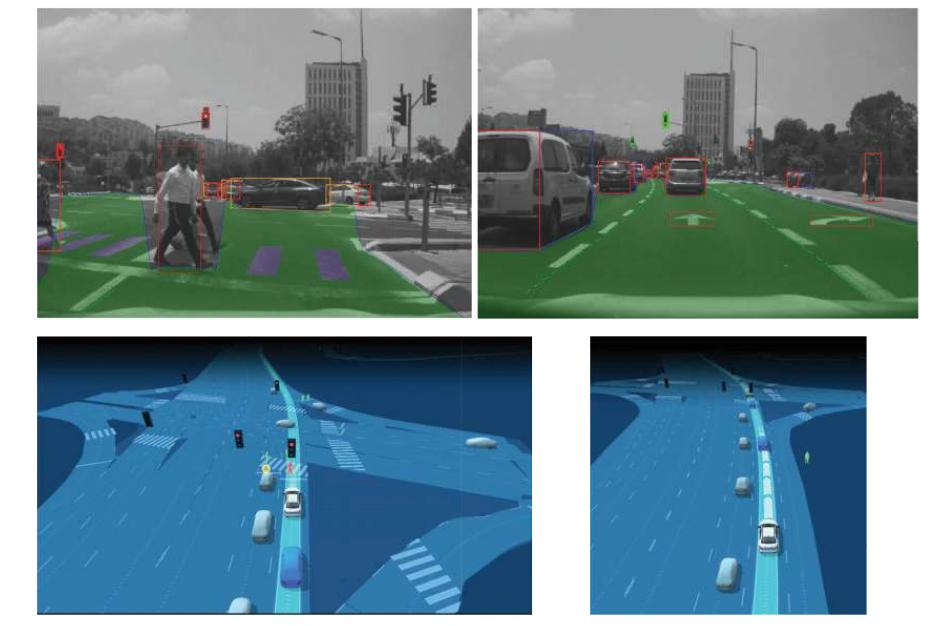
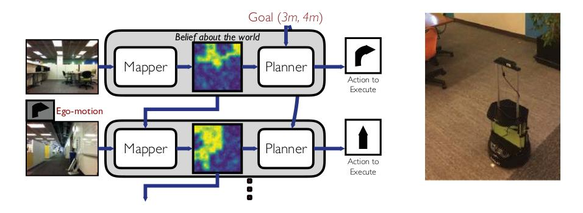
هرچند ادراک برای انسانها فعالیتی بیزحمت به نظر میرسد، به مقدارِ قابلِ توجهی محاسبهٔ پیچیده نیاز دارد. هدفِ بینایی استخراجِ اطلاعاتِ لازم برای تکلیفهایی مانندِ دستکاری، ناوبری و بازشناسیِ اشیا است.
این فصل بر بینایی تمرکز کرده، اما کانالهای ادراکیِ دیگر نیز مطالعه و در رباتیک بهکار رفتهاند. برای ادراکِ شنوایی (شنیدن)، قبلاً بازشناسیِ گفتار را پوشش دادهایم، و کارِ قابلِ توجهی نیز بر ادراکِ موسیقی (کولش و زیبل، 2005) و یادگیریِ ماشینیِ موسیقی (انگل و همکاران، 2017) و همچنین بر یادگیریِ ماشینی برای صداها بهطورِ کلی (شاران و مویر، 2016) شده.
ادراکِ لامسه یا لمس (لو و همکاران، 2017) در رباتیک مهم است و در فصل ۲۶ بحث میشود. ادراکِ بویاییِ خودکار (بو) کارِ کمتری دیده، اما نشان داده شده مدلهای یادگیری عمیق میتوانند یاد بگیرند بوها را بر مبنای ساختارِ مولکولها پیشبینی کنند (سانچز-لنگلینگ و همکاران، 2019).
تلاشهای نظاممند برای فهمِ بیناییِ انسانی به دورانِ باستان بازمیگردد. اقلیدس (حدودِ ۳۰۰ پ.م.) دربارهٔ پرسپکتیوِ طبیعی نوشت—نگاشتی که با هر نقطهٔ P در جهانِ سهبعدی، جهتِ پرتوی OPِ پیونددهندهٔ مرکزِ فرافکنیِ O به نقطهٔ P را مرتبط میکند. او بهخوبی از مفهومِ اختلافِ منظرِ حرکتی آگاه بود. نقاشیهای رومیِ باستان، مانندِ آنهایی که توسط فورانِ وزوویوس در ۷۹ میلادی حفظ شدهاند، از نوعی پرسپکتیوِ غیررسمی، با بیش از یک خطِ افق، استفاده میکردند.
فهمِ ریاضیِ فرافکنیِ پرسپکتیوی، این بار در بافتِ فرافکنی رویِ سطوحِ مسطح، پیشرفتِ چشمگیرِ بعدیاش را در قرنِ پانزدهم در رنسانسِ ایتالیا داشت. برونلسکی معمولاً بهعنوانِ خالقِ نخستین نقاشیهای مبتنی بر فرافکنیِ هندسیِ درستِ صحنهٔ سهبعدی در حدودِ ۱۴۱۳ شناخته میشود. در ۱۴۳۵، آلبرتی قاعدهها را مدون کرد و نسلهایی از هنرمندان را الهام بخشید. لئوناردو داوینچی و آلبرشت دورر در توسعهٔ علمِ پرسپکتیو، چنانکه در آن روزگار نامیده میشد، بهویژه قابلِ توجهاند. توصیفهای لئوناردو در اواخرِ قرنِ پانزدهم از تعاملِ نور و سایه (کیاروسکورو)، نواحیِ سایهٔ کامل (umbra) و نیمسایه (penumbra)، و پرسپکتیوِ هوایی هنوز در ترجمه خواندنیاند (کمپ، 1989).
هرچند پرسپکتیو برای یونانیان شناختهشده بود، بهشکلِ عجیبی دربارهٔ نقشِ چشمها در بینایی گیج بودند. ارسطو فکر میکرد چشمها دستگاههاییاند که پرتو نشر میکنند، تا حدی مانندِ فاصلهیابهای لیزریِ مدرن. این دیدگاهِ اشتباه توسط کارِ دانشمندانِ عرب، مانندِ ابنهیثم (الحازن)، در قرنِ دهم از میان برداشته شد.
توسعهٔ انواعِ گوناگونِ دوربین دنبال شد. اینها شاملِ اتاقهایی بودند (camera در لاتین به معنای «اتاق» است) که نور از سوراخِ کوچکی در یک دیوار وارد میشد تا تصویری از صحنهٔ بیرون رویِ دیوارِ مقابل بیندازد. البته، در همهٔ این دوربینها، تصویر وارونه بود، که سردرگمیِ بیپایانی ایجاد میکرد. اگر قرار بود چشم بهعنوانِ چنین دستگاهِ تصویربرداریای در نظر گرفته شود، چگونه راستبهبالا میبینیم؟ این معما بزرگترین ذهنهای آن دوران (از جملهِ لئوناردو) را به خود مشغول کرد. کارِ کپلر و دکارت برای حلِ پرسش لازم بود. دکارت چشمی را که کوتیکولِ ماتش برداشته شده بود در سوراخی از کرکرهٔ پنجره قرار داد. نتیجه تصویری وارونه بود که رویِ کاغذی که رویِ شبکیه گذاشته شده بود تشکیل میشد. هرچند تصویرِ شبکیهای در واقع وارونه است، این مشکلی ایجاد نمیکند، زیرا مغز تصویر را درست تفسیر میکند. در اصطلاحِ مدرن، فقط باید به ساختارِ داده بهطورِ مناسب دسترسی داشت.
پیشرفتهای بزرگِ بعدی در فهمِ بینایی در قرنِ نوزدهم رخ داد. کارِ هلمهولتز و وونت، که در فصل ۱ توصیف شد، آزمایشِ روانفیزیکی را بهعنوانِ رشتهٔ علمیِ سختگیرانهای برقرار کرد. از طریقِ کارِ یانگ، ماکسول و هلمهولتز، نظریهٔ سهرنگیِ بیناییِ رنگی برقرار شد. این واقعیت که انسانها میتوانند عمق ببینند اگر تصاویرِ ارائهشده به چشمِ چپ و راست کمی متفاوت باشند توسط اختراعِ استریوسکوپِ ویتستون (1838) نشان داده شد. این دستگاه بلافاصله در اتاقهای نشیمن و سالنهای سراسرِ اروپا محبوب شد.
مفهومِ ضروریِ استریوپسیسِ دوچشمی—که دو تصویرِ صحنهای که از دیدگاههای کمی متفاوت گرفته شدهاند اطلاعاتِ کافی برای بهدستآوردنِ بازسازیِ سهبعدیِ صحنه حمل میکنند—در حوزهٔ فتوگرامتری بهرهبرداری شد. نتایجِ ریاضیِ کلیدی بهدست آمد؛ برای نمونه، کروپا (1913) اثبات کرد با توجه به دو نمایِ پنج نقطهٔ متمایزِ صحنه، میتوان چرخش و انتقالِ بینِ دو موقعیتِ دوربین و همچنین عمقِ صحنه را (تا حدِّ عاملِ مقیاس) بازسازی کرد.
هرچند هندسهٔ استریوپسیس مدتِ طولانی فهمیده شده بود، مسئلهٔ تناظر در فتوگرامتری قبلاً توسط انسانهایی حل میشد که میکوشیدند نقطههای متناظر را تطبیق دهند. تواناییِ شگفتانگیزِ انسانها در حلِ مسئلهٔ تناظر توسط استریوگرامهای نقطهٔ تصادفیِ ژولز (1971) نشان داده شد. حوزهٔ بیناییِ رایانه تلاشِ زیادی به راهحلِ خودکارِ مسئلهٔ تناظر اختصاص داده.
در نیمهٔ نخستِ قرنِ بیستم، مهمترین نتایجِ پژوهشیِ بینایی توسط مکتبِ گشتالتِ روانشناسی، به رهبریِ ماکس ورتایمر، بهدست آمد. آنها به اهمیتِ سازماندهیِ ادراکی اشاره کردند: برای انسان، تصویر مجموعهای از خروجیهای گیرندهٔ نوریِ نقطهای (پیکسل) نیست، بلکه به گروههای منسجم سازمانیافته است. تکلیفِ بیناییِ رایانهایِ یافتنِ ناحیهها و منحنیها به این بینش بازمیگردد. گشتالتیها همچنین توجه را به پدیدهٔ «شکل-زمینه» جلب کردند—کانتوری که دو ناحیهٔ تصویر را که در جهان در عمقهای متفاوتاند جدا میکند به نظر میرسد فقط به ناحیهٔ نزدیکتر، «شکل»، تعلق دارد، نه به ناحیهٔ دورتر، «زمینه».
کارِ گشتالت توسط جی. جی. گیبسون (1950, 1979) ادامه یافت، که به اهمیتِ جریانِ نوری و گرادیانهای بافت در برآوردِ متغیرهای محیطی مانندِ شیب و میلِ سطح اشاره کرد. او دوباره بر اهمیتِ محرک و غنایِ آن تأکید کرد. گیبسون، اولوم و روزنبلات (1955) اشاره کردند میدانِ جریانِ نوری اطلاعاتِ کافی برای تعیینِ حرکتِ ناظر نسبت به محیط دارد. گیبسون بهویژه بر نقشِ ناظرِ فعال تأکید کرد، که حرکتِ خودهدایتشدهاش برداشتِ اطلاعات دربارهٔ محیطِ خارجی را تسهیل میکند.
بیناییِ رایانه به دههٔ ۱۹۶۰ بازمیگردد. پایاننامهٔ رابرتز (1963) در MIT دربارهٔ ادراکِ مکعبها و دیگر اشیای جهانِ بلوکها یکی از نخستین انتشاراتِ حوزه بود. رابرتز چند ایدهٔ کلیدی معرفی کرد، از جملهِ تشخیصِ لبه و تطبیقِ مبتنی بر مدل.
در دهههای ۱۹۶۰ و ۱۹۷۰ پیشرفت کند بود، که توسط کمبودِ منابعِ محاسباتی و ذخیرهسازی مختل میشد. پردازشِ بصریِ سطحپایین توجهِ زیادی دریافت کرد، با فنونِ برگرفته از حوزههای مرتبط مانندِ پردازشِ سیگنال، بازشناسیِ الگو و خوشهبندیِ داده. تشخیصِ لبه بهعنوانِ گامِ ضروریِ نخستِ پردازشِ تصویر تلقی میشد، زیرا مقدارِ دادهٔ پردازشی را کاهش میداد. فنِ پرکاربردِ تشخیصِ لبهٔ کنی توسط جان کنی (1986) معرفی شد. مارتین، فاولکس و مالیک (2004) نشان دادند چگونه چند سرنخ، مانندِ روشنایی، بافت و رنگ، را در چارچوبِ یادگیریِ ماشینی برای یافتنِ بهترِ منحنیهای مرز ترکیب کنیم. مسئلهٔ نزدیکِ مرتبطِ یافتنِ ناحیههای روشنایی، رنگ و بافتِ منسجم بهطورِ طبیعی به فرمولبندیهایی وام میدهد که در آنها یافتنِ بهترین افراز به مسئلهٔ بهینهسازی تبدیل میشود. سه نمونهٔ پیشرو مبتنی بر میدانهای تصادفیِ مارکوف بهدلیلِ گمان و گمان (1984)، فرمولبندیِ تغییراتیِ مامفورد و شاه (1989)، و برشهای نرمالشده توسط شی و مالیک (2000) هستند.
در بخشِ بزرگی از دهههای ۱۹۶۰، ۱۹۷۰ و ۱۹۸۰، دو پارادایمِ متمایز وجود داشت که در آنها بازشناسیِ بصری دنبال میشد، که توسط دیدگاههای متفاوت دربارهٔ آنچه مسئلهٔ اصلی تلقی میشد دیکته میشد. پژوهشِ بیناییِ رایانهای دربارهٔ بازشناسیِ اشیا عمدتاً بر مسائلِ ناشی از فرافکنیِ اشیای سهبعدی به تصاویرِ دوبعدی تمرکز میکرد. ایدهٔ همترازی، که همچنین نخستین بار توسط رابرتز معرفی شد، در دههٔ ۱۹۸۰ در کارِ لو (1987) و هوتنلوخر و اولمن (1990) دوباره ظاهر شد.
جامعهٔ بازشناسیِ الگو رویکردِ متفاوتی گرفت و جنبههای 3D-به-2Dِ مسئله را بیاهمیت میدید. مثالهای انگیزشیِ آنها در حوزههایی مانندِ بازشناسیِ نوریِ نویسهها و بازشناسیِ کدِ پستیِ دستنویس بود، که نگرانیِ اصلی در آنها یادگیریِ تغییرهای معمولِ مشخصهٔ ردهای از اشیا و جداسازیِ آنها از ردههای دیگر است. میتوانیم معماریهای شبکهٔ عصبیِ تحلیلِ تصویر را به مطالعاتِ هیوبل و ویزل (1962, 1968) از قشرِ بینایی در گربهها و میمونها بازجست. آنها مدلِ سلسلهمراتبیِ مسیرِ بینایی توسعه دادند با نورونهایی در نواحیِ پایینترِ مغز (بهویژه ناحیهای به نامِ V1) که به ویژگیهایی مانندِ لبهها و میلههای جهتدار پاسخ میدهند، و نورونهایی در نواحیِ بالاتر که به محرکهای خاصتر پاسخ میدهند («سلولهای مادربزرگ» در نسخهٔ کارتونی).
فوکوشیما (1980) معماریِ شبکهٔ عصبیِ بازشناسیِ الگو را پیشنهاد کرد که صریحاً توسط سلسلهمراتبِ هیوبل و ویزل انگیخته شده بود. مدلِ او لایههای متناوبِ سلولهای ساده و پیچیده داشت، که بدینترتیب پاییننمونهبرداری را دربرمیگرفت، و همچنین ناورداییِ جابهجایی داشت، که بدینترتیب ساختارِ پیچشی را دربرمیگرفت. لکون و همکاران (1989) گامِ اضافیِ استفاده از پسانتشار برای آموزشِ وزنهای این شبکه را برداشتند، و آنچه امروز شبکههای عصبیِ پیچشی مینامیم زاده شد. برای مقایسهٔ رویکردها، لکون و همکاران (1995) را ببینید.
از اواخرِ دههٔ ۱۹۹۰، همراه با نقشِ بسیار بزرگترِ مدلسازیِ احتمالاتی و یادگیریِ ماشینیِ آماری در حوزهٔ هوش مصنوعی بهطورِ کلی، نزدیکیِ بینِ این دو سنت رخ داد. دو خطِ کار سهمِ چشمگیری داشتند. یکی پژوهشِ تشخیصِ چهره (راولی و همکاران، 1998؛ ویولا و جونز، 2004) بود که قدرتِ فنونِ بازشناسیِ الگو را در تکلیفهای بهوضوح مهم و مفید نشان داد. دیگری توسعهٔ توصیفگرهای نقطهای بود، که ساختِ بردارهای ویژگی از بخشهای اشیا را ممکن میکنند (اشمید و مور، 1996). سه راهبردِ کلیدی برای ساختنِ توصیفگرِ نقطهٔ محلیِ خوب هست: یکی استفاده از جهتها برای گرفتنِ ناورداییِ روشنایی است؛ یکی نیاز به توصیفِ ساختارِ تصویرِ نزدیکِ نقطه با جزئیات، و دورتر فقط تقریبی است؛ و یکی نیاز به استفاده از هیستوگرامهای فضایی برای سرکوبِ تغییرهای ناشی از خطاهای کوچکِ مکانیابیِ نقطه است. توصیفگرِ SIFTِ لو (2004) از این ایدهها بسیار مؤثر بهره برد؛ گونهٔ محبوبِ دیگر توصیفگرِ HOG بهدلیلِ دالال و تریگز (2005) بود.
دهههای ۱۹۹۰ و ۲۰۰۰ بحثِ ادامهداری بینِ طرفدارانِ طراحیِ ویژگیِ هوشمندانه مانندِ SIFT و HOG و شیفتگانِ شبکههای عصبی که باور داشتند ویژگیهای خوب باید بهصورتِ خودکار از آموزشِ سرتاسری پدید آیند دید. راهِ حلِ چنین بحثی از طریقِ معیارها رویِ مجموعههای دادهٔ استاندارد است، و در دههٔ ۲۰۰۰ نتایجِ رویِ مجموعهٔ دادهٔ استانداردِ تشخیصِ شیء، PASCAL VOC، به نفعِ ویژگیهای دستطراحیشده استدلال کرد. این وقتی تغییر کرد که کریژفسکی و همکاران (2013) نشان دادند در تکلیفِ ردهبندیِ تصویر رویِ مجموعهٔ دادهٔ ImageNet، شبکهٔ عصبیشان (به نامِ AlexNet) نرخهای خطایِ بهشکلِ چشمگیری پایینتر از فنونِ اصلیِ بیناییِ رایانه میدهد.
سسِ مخفیِ پشتِ موفقیتِ AlexNet چه بود؟ علاوه بر نوآوریهای فنی (مانندِ استفاده از واحدهای فعالسازیِ ReLU)، باید اعتبارِ زیادی به دادهٔ بزرگ و محاسبهٔ بزرگ بدهیم. با «دادهٔ بزرگ» منظورِ در دسترسبودنِ مجموعههای دادهٔ بزرگِ با برچسبِ رده است، مانندِ ImageNet، که دادهٔ آموزشیِ این شبکههای بزرگ و عمیقِ با میلیونها پارامتر را فراهم کرد. مجموعههای دادهٔ قبلی مانندِ Caltech-101 یا PASCAL VOC دادهٔ آموزشیِ کافی نداشتند، و MNIST و CIFAR توسط جامعهٔ بیناییِ رایانه «مجموعههای دادهٔ اسباببازی» تلقی میشدند. این رشتهٔ برچسبزدنِ مجموعههای داده برای معیارگذاری و برای استخراجِ آمارِ تصویر خود توسط میلِ مردم به آپلودِ مجموعهعکسهایشان در اینترنت در سایتهایی مانندِ فلیکر ممکن شد. راهی که محاسبهٔ بزرگ مفیدترین ثابت شد از طریقِ GPUها بود، توسعهٔ سختافزاری که در ابتدا توسط نیازهای صنعتِ بازیِ ویدئویی رانده شد.
در عرضِ یک یا دو سال، شواهد کاملاً روشن بود. برای نمونه، کارِ شبکهٔ عصبیِ پیچشیِ مبتنی بر ناحیه (RCNN) توسط گیرشیک و همکاران (2016) نشان داد معماریِ AlexNet را میتوان اصلاح کرد، با استفاده از ایدههای بیناییِ رایانهای مانندِ پیشنهادِ ناحیه، تا تشخیصِ شیءِ پیشتاز رویِ PASCAL VOC ممکن شود. دریافتهایم بهطورِ کلی شبکههای عمیقتر بهتر کار میکنند و ترسهای بیشبرازش اغراقآمیزند. فنونِ تازهای مانندِ نرمالسازیِ دستهای برای برخورد با منظمسازی داریم.
بازسازیِ ساختارِ سهبعدی از نماهای متعدد ریشههایش در ادبیاتِ فتوگرامتری دارد. در دورانِ بیناییِ رایانه، اولمن (1979) و لونگوئه-هیگینز (1981) کارهای اولیهٔ تأثیرگذارند. نگرانیها دربارهٔ پایداریِ ساختار-از-حرکت بهشکلِ چشمگیری توسط کارِ توماسی و کاناد (1992) کاهش یافت، که نشان دادند با استفاده از فریمهای متعدد و خطِ مبنایِ وسیعِ حاصل، شکل را میتوان کاملاً دقیق بازیابی کرد. نوآوریِ مفهومیِ معرفیشده در دههٔ ۱۹۹۰ مطالعهٔ ساختارِ فرافکنی از حرکت بود. در اینجا کالیبراسیونِ دوربین لازم نیست، چنانکه فوژرا (1992) نشان داد. این کشف با معرفیِ استفاده از ناورداهای هندسی در بازشناسیِ اشیا، چنانکه ماندی و زیسرمن (1992) مرور کردهاند، و توسعهٔ ساختارِ وابسته از حرکت توسط کوندرینک و ون دورن (1991) مرتبط است.
در دههٔ ۱۹۹۰، با افزایشِ زیادِ سرعت و ذخیرهٔ رایانه و در دسترسبودنِ گستردهٔ ویدئویِ دیجیتال، تحلیلِ حرکت کاربردهای تازهٔ بسیاری یافت. ساختنِ مدلهای هندسیِ صحنههای جهانِ واقعی برای رندر با فنونِ گرافیکِ رایانهای بهویژه محبوب ثابت شد، که توسط الگوریتمهای بازسازی مانندِ توسعهدادهشده توسط دبِوک و همکاران (1996) رهبری میشد. کتابهای هارتلی و زیسرمن (2000) و فوژرا و همکاران (2001) رسیدگیِ جامعی به هندسهٔ نماهای متعدد فراهم میکنند.
انسانها میتوانند شکل و چیدمانِ فضایی را از یک تصویرِ تکی ادراک کنند، و مدلکردنِ این برای پژوهشگرانِ بیناییِ رایانه چالشِ بزرگی ثابت شده. استنتاجِ شکل از سایهروشن نخستین بار توسط برتولد هورن (1970) مطالعه شد، و هورن و بروکس (1989) مرورِ گستردهای از مقالههای اصلیِ دورهای ارائه میکنند که این مسئله در آن بسیار مطالعه میشد.
گیبسون (1950) نخستین کسی بود که گرادیانهای بافت را بهعنوانِ سرنخی برای شکل پیشنهاد کرد. ریاضیاتِ کانتورهای مسدودکننده، و بهطورِ کلیتر فهمِ رویدادهای بصری در فرافکنیِ اشیای منحنیِ هموار، مدیونِ کارِ کوندرینک و ون دورن است، که رسیدگیِ گستردهای در کتابِ «شکلِ جامد»ِ کوندرینک (1990) مییابد.
اخیراً، توجه به درمانِ مسئلهٔ بازیابیِ شکل و سطح از یک تصویرِ تکی بهعنوانِ مسئلهٔ استنتاجِ احتمالاتی معطوف شده، که در آن سرنخهای هندسی بهصورتِ صریح مدل نمیشوند، بلکه بهصورتِ ضمنی در چارچوبِ یادگیری استفاده میشوند. مثالِ خوبِ آن کارِ هویِم و همکاران (2007) است؛ اخیراً این با شبکههای عصبیِ عمیق بازکاری شده.
حالا به کاربردهای بیناییِ رایانه برای هدایتِ کنش بپردازیم، دیکمنس و زاپ (1987) نخستین بار خودرویِ خودرانی را نشان دادند که با سرعتهای بالا در آزادراهها رانندگی میکرد؛ پومرلو (1993) با رویکردِ شبکهٔ عصبی به عملکردِ مشابهی رسید. امروزه ساختنِ خودروهای خودران کسبوکاری بزرگ است، با شرکتهای خودروسازیِ تثبیتشده که با تازهواردهایی مانندِ بایدو، کروز، دیدی، گوگلِ ویمو، لیفت، موبایلآی، نورو، انویدیا، سامسونگ، تاتا، تسلا، اوبر و وویاژ رقابت میکنند تا سامانههایی به بازار عرضه کنند که قابلیتهایی از کمکراننده تا خودمختاریِ کامل را فراهم میکنند.
برای خوانندهٔ علاقهمند به بیناییِ انسانی، «علمِ بینایی: از فوتونها تا پدیدارشناسی» از استیون پالمر (1999) بهترین رسیدگیِ جامع را فراهم میکند؛ «ادراکِ بصری: فیزیولوژی، روانشناسی و بومشناسی» از ویکی بروس، پاتریک گرین و مارک جورجسون (2003) کتابِ درسیِ کوتاهتری است. کتابهای «چشم، مغز و بینایی» از دیوید هیوبل (1988) و «ادراک» از اروین راک (1984) مقدمههای دوستانهایاند که بهترتیب بر عصبفیزیولوژی و ادراک متمرکزند. کتابِ «بینایی»ِ دیوید مار (مار، 1982) نقشِ تاریخی در پیوندِ بیناییِ رایانه به حوزههای سنتیِ بیناییِ زیستی—روانفیزیک و عصبزیستشناسی—ایفا کرد. هرچند بسیاری از مدلهای خاصِ او برای تکلیفهایی مانندِ تشخیصِ لبه و بازشناسیِ اشیا آزمونِ زمان را تاب نیاوردهاند، چشماندازِ نظریِ او که در آن هر تکلیف در سطحِ اطلاعاتی، محاسباتی و پیادهسازی تحلیل میشود همچنان روشنگر است.
برای حوزهٔ بیناییِ رایانهای، جامعترین کتابهای درسیِ در دسترسِ امروز «بیناییِ رایانهای: رویکردی مدرن» (فورسایت و پونس، 2002) و «بیناییِ رایانهای: الگوریتمها و کاربردها» (زلیسکی، 2011) هستند. مسائلِ هندسی در بیناییِ رایانهای بهطورِ کامل در «هندسهٔ چندنمایی در بیناییِ رایانهای» (هارتلی و زیسرمن، 2000) بررسی شدهاند. این کتابها پیش از انقلابِ یادگیریِ عمیق نوشته شدهاند، بنابراین برای تازهترین نتایج، به مقالهها و ادبیاتِ پژوهشیِ اصلی مراجعه کنید.
دو تا از ژورنالهای اصلی برای بیناییِ رایانهای عبارتاند از IEEE Transactions on Pattern Analysis and Machine Intelligence و International Journal of Computer Vision. کنفرانسهای بیناییِ رایانهای شاملِ ICCV (کنفرانسِ بینالمللیِ بیناییِ رایانهای)، CVPR (بیناییِ رایانهای و بازشناسیِ الگو)، و ECCV (کنفرانسِ اروپاییِ بیناییِ رایانهای) هستند. پژوهشهایی که مؤلفهٔ یادگیریِ ماشینیِ چشمگیری دارند نیز در NeurIPS (سامانههای پردازشِ اطلاعاتِ عصبی) منتشر میشوند، و کارهای مرتبط با فصلِ مشترک با گرافیکِ رایانهای اغلب در کنفرانسِ ACM SIGGRAPH (گروهِ علایقِ ویژه در گرافیک) ظاهر میشوند. بسیاری از مقالههای بینایی بهصورتِ پیشچاپ روی سرورِ arXiv قرار میگیرند، و گزارشهای اولیه از نتایجِ تازه در وبلاگهای آزمایشگاههای پژوهشیِ بزرگ منتشر میشوند.
¹ اصطلاحِ «جعبه» (Box) را برای هر ناحیهٔ مستطیلیِ همراستا با محورِ تصویر استفاده میکنیم، و اصطلاحِ «پنجره» (Window) را بیشتر بهعنوانِ مترادفِ «جعبه»، اما با این مفهوم ضمنی که پنجرهای به رویِ ورودی داریم که امیدواریم چیزی در آن ببینیم، و جعبهٔ محدودکنندهای در خروجی وقتی آن را یافتهایم.